| お庭番望月蒼司朗参る!10 更衣の祓いとお引っ越し (ビーズログ文庫アリス) | |
| 流 星香 & 榊 空也 | |
| エンターブレイン (2012) | |
お庭番望月蒼司朗参る！
更衣の祓いとお引っ越し
流星香

電子版 ビーズログ文庫
本作品の全部または一部を無断で複製、転載、配信、送信すること、あるいはウェブサイトへの転載等を禁止します。また、本作品の内容を無断で改変、改ざん等を行うことも禁止します。
本作品購入時にご承諾いただいた規約により、有償・無償にかかわらず本作品を第三者に譲渡することはできません。
本作品を示すサムネイルなどのイメージ画像は、再ダウンロード時に予告なく変更される場合があります。
本作品の内容は、底本発行時の取材・執筆内容にもとづきます。
本作品は縦書きでレイアウトされています。
また、ご覧になるリーディングシステムにより、表示の差が認められることがあります。
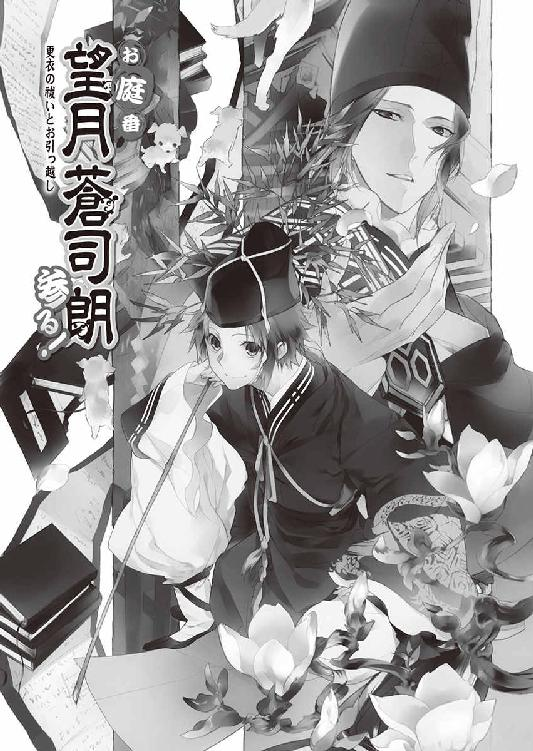
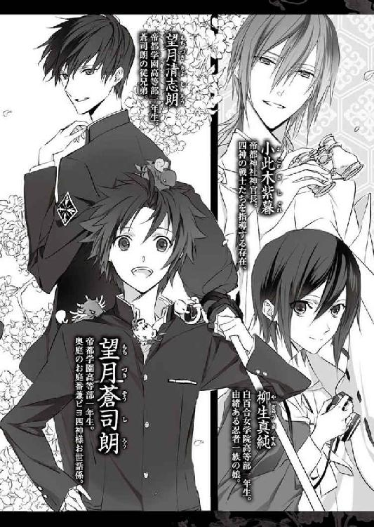
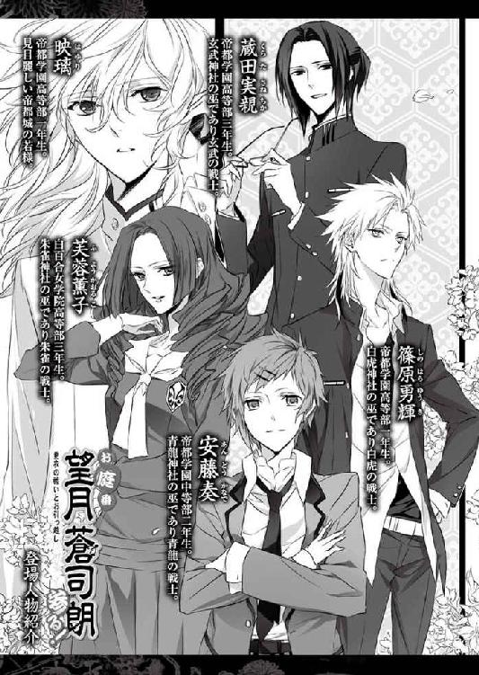
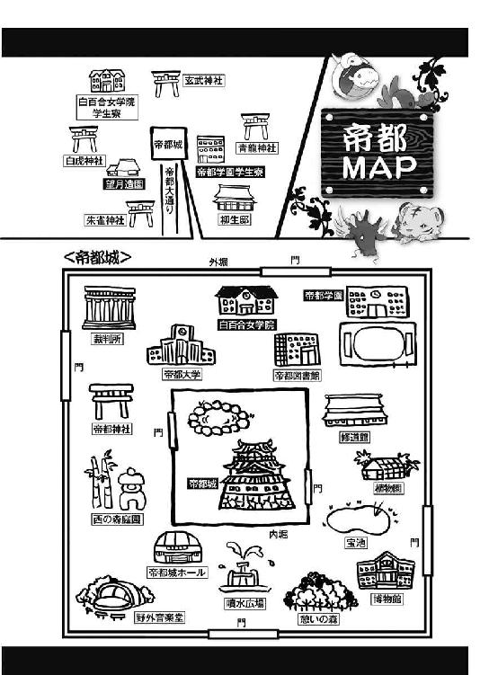
１
首都帝都、華やかなる中心地、帝都城は二重の堀に囲まれた、強固な結界領域である。
内堀と外堀に架かる橋、それぞれの橋に面した門には開閉の時間があり、警備を任された門番の監視の目が二十四時間隙なく光っている。
門番や、巡視を行っている警備員の存在は、帝都城を訪れる誰もが知っているが、もっと自然な目立たない形で、そっと帝都城を守っているものもいる。
「ピ」
頭の上に乗っていたチビ朱雀が鳴いた。
帝都城公園、野外音楽堂近くの樹木剪定の手伝いをしていた、庭師見習いの望月蒼司朗は、集めていた剪定屑の上を横切っていった小さな影に気づいて顔を上げる。
「燕だ」
青空を滑るように飛んでいく爽快な姿に、蒼司朗は思わず顔を綻ばせた。
蒼司朗の声が聞こえた庭師たちも、作業の手を止めて空を仰ぎ見る。
「いよいよ、春本番だな」
望月造園の親方であり、蒼司朗の伯父・望月左近は、庭師たちの間を回って樹木の様子を確認しながら空を仰ぎ、眩しそうに目を細めた。
夏鳥である燕が、帝都に飛来するのは春。
燕が春を連れてくる。
春になると、冬の間休眠していた虫たちも活発に動きだす。燕は樹木につく害虫を食べてくれる益鳥なので、蒼司朗たち庭師にはとても好ましい、仲間のような鳥だ。
燕を目で追う蒼司朗に、若い庭師の池波は晴れやかに教える。
「蒼ちゃん、あの燕はきっと、憩いの森の売店のヤツっスね」
餌を求めて燕の飛ぶ範囲は、だいたい決まっている。今作業している場所の少し向こうにある売店に、巣を作った燕に違いない。
「売店の軒下に、燕の巣があるんスよ」
燕は同じ巣に戻ってくる性質がある。
毎年春、同じ巣に飛来して卵を産み、子育てして、秋には他の土地に行く。
「憩いの森の売店かぁ」
蒼司朗は通りすがりに燕の巣を観察するのが好きだ。
以前、別の場所で見たことのある燕の巣の様子を思い出し、蒼司朗はくすっと笑う。
狭いながらも楽しい我が家、小さな巣にたくさんの子燕がひしめき合いながら、親燕に餌をもらっている姿は、微笑ましくて可愛い。
「もっさりした、でっけぇワン公のいるあたりっスよ」
「蒼くん。休憩時間になったら、一緒に行こう」
集めた剪定屑を運んで蒼司朗の横を通った従兄弟の清志朗は、蒼司朗ににこりと微笑みかける。
「うん」
近寄って撫でたりしたことはないが、憩いの森の売店にいる大型で毛がもさもさの犬は、蒼司朗も何度か見かけている。
「あのワン公はマジすげぇっスよ、蒼ちゃん」
「コラ、池！ 喋くってっと手が止まってらぁ！ きりきり仕事しやがれ！」
拳を振り上げた親方に怒鳴られ、池波は慌てて作業に集中した。
「燕の子が生まれるにゃ、まぁだちっとばかし早ぇぜ、蒼」
苦笑した望月左近は、蒼司朗の頭をくしゃっと撫でて、横を通りすぎる。
燕は帝都に渡ってきたばかりだ。
「そんなのわかってるよ......！」
蒼司朗は口を尖らせ、伯父に乱された髪を直して作業を続ける。
まだ子燕はいなくても、巣の場所だけ確認しておきたい。そのうちきっと、子燕が生まれて可愛らしい姿を見せてくれるだろうから。
休憩時間になって、望月造園の法被姿のままいつものように枝打ち斧を持ち、蒼司朗は清志朗と一緒に憩いの森の売店に向かう。
「ミギャギャ」
「キュイィ」
「チュッピピピ」
「「（しゅー）」」
「いや、買い食いしに行くんじゃないよ」
身体のあちこちにくっついて隠れながらはしゃぐ小さな四神様に、困った顔で言う蒼司朗を見て、清志朗は苦笑する。
「売店には色々売ってるからね」
「今日の目的は買い物じゃないし」
「「「「「ぶー」」」」」
「また今度！」
一斉にブーイングした四神様を、蒼司朗は順番に撫で撫でして可愛がって、機嫌を直させる。
強大な力で帝都城を守護する奥庭の四神様は、蒼司朗に再整備された奥庭とリンクするように、赤ちゃん返りした姿で、ただ今ピヨピヨちびっこライフを満喫中だ。
奥庭の庭師として抜擢された高校一年生、望月造園の見習い庭師である蒼司朗は、帝都の帝からピヨ四神のお世話係に任命された。
奥庭の四神のお気に入りとはいえ、庭師を目指す少年の身に余る過ぎたお役目は、帝都の神官たちの反感を買う。必要に迫られた蒼司朗は、神官修行にも精を出す多忙な毎日を送っている。
好奇心旺盛なピヨ四神と一緒にいると、それなりに手間はかかるし、やらなければいけないこともたくさんあるのに加えて、大変なことも多いが、蒼司朗は今の帝都での生活を気に入っている。
帝都城公園内にある売店は、一階に土産物などの売店、二階に軽食の食堂があり、警備員詰め所の併設された建物だ。
売店には掃除の行き届いた化粧室や、景色を眺めながら休憩できるベンチもたくさんあるので、誰もが気楽にちょっと立ち寄りたくなる場所だ。
帝都城公園にある売店はすべて、有名な建築家が設計したものなので、帝都城公園を紹介する雑誌には、よく写真が掲載されている。
帝都城公園に足を運んだことがある者は、売店を見ただけで、それがどこなのか、場所がわかるだろう。
「蒼くん、憩いの森の売店にいる犬は、あそこで働いている職員の小早川さんの犬なんだ。毎朝、小早川さんと一緒に出勤して、一緒に帰るんだよ」
「そうなんだ。だから夜にはいないのか。昼間確かにいたのに、あの犬どこに行っちゃうんだろうって、ずっと不思議だったんだ」
売店に住んでいるわけではなかったのだと、蒼司朗は納得する。
「えーっと、建物の西側だったよね」
犬を見かけた場所を思い出す蒼司朗に、清志朗は微笑む。
「うん。あの犬、あの場所が定位置なんだ。夏の西日が強いときも、雨や雪の日にもあそこから動かないから、四年前から犬のために取り外し式の庇がつけられたんだよ」
建物の外観は損ないたくないが、犬の居心地はよくしてやりたい。苦肉の策である。
「燕の巣は犬の庇の近く、一階と二階の間ぐらいにあるよ」
今日、望月造園が作業していたのは野外音楽堂の近くの樹木だったので、西側から憩いの森に近づくことになった蒼司朗たちは、売店と犬をセットで見つけることができた。
すでに風景の一部と化している犬は、今日も同じ場所で、のへーっと寝そべっていた。
犬の頭や背中に、数羽の雀がとまって遊んでいる。
そこにいるだけで癒し系の犬の姿に、思わず顔が綻んだ蒼司朗だが。
「ピッ！」
警告するように鳴いたチビ朱雀の声と同時に、犬が素早く身を起こした。
犬の上で遊んでいた雀が、驚いて一斉に飛び立つ。
「ミギャギャギャギャ！」
「キュイキュイキュオ！」
「「（しゃーしゃー！）」」
「蒼くん、あれ！」
ピヨ四神が緊急事態を告げて騒ぎ、事態に気づいて駆けだした蒼司朗は、枝打ち斧を投げ渡し、清志朗の声を背中で聞いた。
売店の二階。
開いている腰高窓から、二歳ぐらいの幼い男の子が身を乗りだしている。
落ちる────！
（間に合わない！）
飛ぶような勢いで猛ダッシュしながら、蒼司朗はぎりっと歯を嚙み締める。
売店の近くには何人も人間がいるが、誰も気づいていない。
売店の周囲は、水はけがいいように石畳で舗装されている。落下して石畳に叩きつけられれば、大怪我をするだろう。打ちどころが悪ければ、取り返しのつかないことになる。
「ウォン！」
大声でひと声吠えた犬は、男の子の落下地点に駆けこむと、背を下にして寝そべった。
窓から転落した男の子が、犬の腹の上に落ちる。
柔らかい犬の腹に落ちた男の子は、軽く跳ねるようにして、するんと石畳に落ちた。
突然のことに驚いた男の子は、一瞬呆然とし────。
火がついたように泣きだした。
売店の中や近くにいて、ただならない声で吠えた犬に驚いて振り向いた者たちは、男の子が落下した瞬間を目撃した。
全力疾走したものの、犬に遅れること十歩。
泣いている男の子のところに駆けつけた蒼司朗は、急いでしゃがんで男の子を抱き起こす。
（すごい、無傷だ......！）
まだ衣服をしっかり着込んでいる時期であることも幸いしたのか、擦り傷ひとつない。
「クーン......」
身を起こした犬が、蒼司朗の横にお座りし、抱っこされている男の子の頰をぺろぺろと舐めた。
「ミギャ」
「キュイキュイ」
「チュチュチュピピチュ」
「「（しゅー）」」
蒼司朗にくっついているピヨ四神も、泣いている男の子に肉球タッチしたり鼻面ふんふんしたり、頭すりすりしたり、ぺろぺろ舐めたりして慰める。
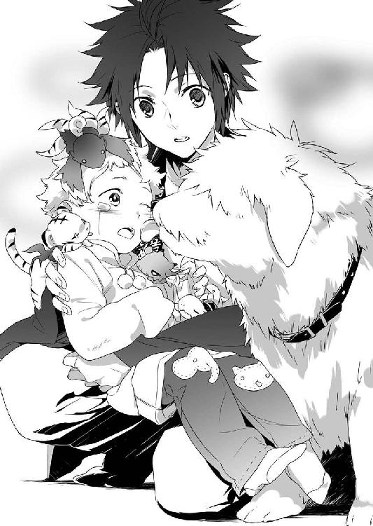
帝都城公園は内堀の外。通常、奥庭の四神様の姿は内堀の内でしか見えないのだが、奥庭の四神様が自分の姿を見せたいと思ったなら、場所に関わらず特定の者にだけ姿が見えることがある。
大型のもっさりワンコと、見たこともないちっちゃくて愛らしい聖獣様たちに慰撫された男の子は、目を丸くして泣きやんだ。
「あっちゃんっ！」
売店の二階の窓から外を覗いた婦人が、悲鳴のような声で叫んで、真っ青になり奥に消えた。
「大丈夫か!?」
「怪我はどう!?」
「救急車を呼んだほうがいいかい!?」
男の子を抱いた蒼司朗に急いで近寄った者たちが、男の子を心配して声をかける。
足を滑らせて階段を落ちることはときどきあるが、建物の二階の窓から外に転落するというのは、大変な事故だ。
その瞬間を目撃したものの、声も出ないほど驚いて、足を竦ませてしまった者も多い。
「骨を折ったりはしてないみたいです。驚いて泣いちゃったみたいですけど」
顔を上げた蒼司朗は、にこりと微笑む。
子供には転倒や落下の事故がよくあるが、そのときに子供が大泣きすれば、それは大抵心配いらない。体重が軽く身体が柔らかい子供は、大人よりも怪我をしないものなのだ。
見上げるほどの高さからの転落は、日常として滅多に経験しない大事故だが、色々な好条件が重なって、男の子は怪我をせずにすんだ。
男の子が声も出せない状態で、ぐったりとしていたなら、蒼司朗は近寄ってもその子を抱き起こさず、急いで救急車を呼ぶように叫んでいただろう。
蒼司朗の返事に、男の子を心配した者たちは、ほっと安堵する。
「いやぁ、見ていた俺らも驚いたって......！」
「無事で本当によかったよ」
見た目にも、男の子は元気そうだ。
「あっちゃん！」
血相を変えて売店から駆けだしてきた母親に、腰を上げた蒼司朗は、抱っこしていた男の子を渡す。
「ありがとうございます、ありがとうございます......！」
ぎゅっと子供を抱えた母親に何度も深々と頭を下げられて、蒼司朗は恐縮する。
「いえ、その子を助けたのは、オレじゃないです。この犬......って、あれ？」
さっきまで蒼司朗の横にいた、もっさりした大型犬は、何ごともなかったかのように、定位置に戻っていくところだった。
「ミギャ」
「キュイィ」
「ピピ、チュッピピ」
「「（しゅー）」」
呼びかけたピヨ四神に、のんびりと歩き去る犬は、ふぁさっと尻尾を振って答えた。
（うっわ、風が来た）
大型犬の尻尾が動くと、けっこうな風が来る。犬を飼ったことのない蒼司朗にとっては、新鮮な驚きだ。
「この犬が、下に寝転がってお腹で受け止めてくれたんですよ」
「えっ......？ まぁ、それは......！」
説明した蒼司朗に、子供をしっかり抱いた母親は信じられないという顔で、歩き去る犬を見送った。
蒼司朗は会釈して、母子から離れる。
母親のあとから、一緒に二階にいた祖父母らしい夫婦も売店の外に出てきて、孫の無事を確認して、ほっと胸を撫で下ろした。
二階の食堂でお茶を飲んでいて、ちょっと目を離した隙に、男の子が窓から転落したようだ。
外傷は見えなかったが、万一の用心にと、母親と祖父母は騒ぎに気づいて駆けつけた警備員に、男の子を帝都大学病院に連れて行きたいとお願いした。
心配することもないとわかり、集まった野次馬も人垣を崩して立ち去っていく。
「────蒼くん」
あとから駆けつけた清志朗が、振り向いた蒼司朗に、預かっていた枝打ち斧を渡した。
「ありがとう、清ちゃん。あの犬すごいよ......！ お腹で子供を受け止めるなんて思わなかった......！」
犬にとって腹部は急所のひとつなのに、身体の一番柔らかい場所をクッションにして子供を受け止めるために、あの犬は躊躇なく仰向けになった。いくら幼い小さな子供でも、あの瞬間に内臓にかかった衝撃は、かなりのものだったはずだ。
あんなふうに自分の身体を差しだして、犬が献身的に子供を助ける姿を、蒼司朗は初めて見た。
「なんて優しくて賢い犬なんだろう......！」
感極まった声を出してから、庭師の池波が言っていたのはこれかと蒼司朗は気づく。
清志朗は蒼司朗に微笑む。
「水に落ちた人を助けたり、落ちたものを拾うために、お堀に飛びこむこともあるんだよ」
「そうなんだ......！」
どうやら、あの犬の人助けは、一度や二度ではなさそうだ。
燕の巣もすぐ近くにあるし、蒼司朗と清志朗は犬を追いかけて建物の西側に向かう。
犬用の小さな庇と燕の巣は、すぐに見つかった。燕は外出中らしく、巣は空だ。
庇の下で、のへーっと長くなって寝そべった犬の上に、また雀がとまる。
燕の巣との位置関係を確認して、蒼司朗は温い笑みを浮かべる。
「......清ちゃん、これ、もしかすると、この庇なかったらさ......」
燕の糞が────。
「うん、五年前は犬の頭に直撃だった。それも可哀想だから、なんだよ」
清志朗は苦笑しながら蒼司朗に頷く。
雀がとまって遊んでいるのを気にしないように、のんびりした大人しい犬は燕の糞の爆撃にもまったく動じなかった。────毎度、糞を拭い取ってやる飼い主の小早川でなくても、犬をどうにかしてやりたいと思うだろう。環境を改善してやりたくなるような、お利口な犬なのだし。
「蒼司朗様、清志朗くん、おはようございます」
後ろから声をかけられ、蒼司朗と清志朗は振り返る。
「小早川さん、おはようございます」
小中学校のときの同級生の父親である、売店職員の小早川に、清志朗は会釈する。帝都で生まれ育ち、幼い頃からよく家業の造園業のお手伝いをしていた清志朗は、帝都のあちこちに知り合いだらけだ。
小早川が望月造園の法被姿の蒼司朗に対して『様』付けなのは、関係者だからだ。
帝都城公園の職員は公務員なので、蒼司朗が帝都城奥庭の専属庭師で、奥庭の四神様のお世話係であることを知っている。
蒼司朗は小早川を見つめて、目を瞬く。
初めて向かい合った人だが、どことなく、知っている顔だ。
「────あの......、ひょっとして、柳生さんの？」
「はい、親戚になります」
小早川は蒼司朗ににこりと微笑んだ。
帝都の公儀隠密、柳生一族。
堀に架かる橋の向こうの門の番人や、帝都城の巡回警備を行っている警備員は、すべて柳生一族の縁者である。売店で働いている者がいても、おかしくない。
小早川が柳生一族の者だと知って、もう一度犬を見てみると────。
「この犬、とてもすごい活躍をしますね。相当の訓練を積んだ犬なんですね」
頭や背中に雀を乗せながら、のんびりのほほんと、日がな一日寝そべっている姿からは、とても想像できないが。
蒼司朗に言われて、小早川は笑顔のまま、声を少し小さくする。
「えぇ『忍犬』ですから」
忍犬とは、忍びの里で厳しい訓練を受けて、鍛え上げられた犬だ。
言われて思い出してみると、無駄吠えせず、大人しくお利口にしているのでついついスルーしてしまうが、帝都城や帝都城公園の要所要所には、様々な種類の犬がいる。
「────この一匹だけじゃ、ないですよね？」
つられて小声で訊ねた蒼司朗に、小早川は微笑んだ。
「さぁ？ どうでしょうね」
否定しないのならば、それは肯定ととっていいだろう。
「────ニャァーン」
ネズミを銜えてどこからかやってきた猫が、静かに微笑んでいる小早川の足に身を擦り寄せた。
歴史や由緒ある木造建築物の多い帝都城では、壁に穴を開けて通路を作り、様々なものを齧って傷つけるネズミは、駆除の対象だ。
帝都城はたくさんのものたちによって、強固に守られている。
２
さぁこれから捜査するぞと、警察犬のように派手に登場することはないが、忍犬たちは独自の判断でさりげなく渋い活躍をしている。
「忍犬なんて、忍者物のお話の中だけだと思ってた......！ 初めて見たよ」
作業場所に戻りながら、感動して、ほーっと息を吐く蒼司朗に、清志朗はくすくすと笑う。
「帝都に来てから、毎日見てたんじゃないかな」
公儀隠密柳生一族が職員として働いている場所の、すべてに犬がいる。どの犬もよく躾けが行き届いた成犬なので、忍犬だと思って間違いないだろう。
「ピ」
蒼司朗の頭の上で、チビ朱雀がちょいと首を傾げる。
帝都城を守護している奥庭の四神様は、忍犬たちのこともよく知っていたようだ。
「言われないとわからないって......！」
確かに清志朗の言うとおり、帝都城で毎日犬を見ていた蒼司朗は、ちょっと赤くなって口を尖らせる。
「言ってまわるようなことじゃないしね。僕も知らなかったよ。蒼くんだから、教えてくれたんだね」
小早川と面識があり、挨拶したり言葉を交わすことがこれまでに何度もあっても、清志朗は売店の犬が忍犬だと聞かされたことは一度もなかった。
帝都城にいるときに限定されるだろうが、いつどんな形で忍犬が蒼司朗のお役目のサポートをすることになるのかわからないので、忍犬が活躍した今日の機会を利用して、小早川は特別に教えてくれたのだ。
忍犬は公儀隠密にとって秘蔵の奥の手なので、よほどのことでもない限り、公儀隠密のお役目には関わらない。
帝都学園高等部が春休みになり、帝都大学で受けている特別授業もお休みになったので、蒼司朗は帝都城奥庭の仕事と、望月造園の仕事、そして帝都神社での神官修行だけの活動になった。
やることが楽になったわけではないが、分刻みで動くことがなくなって、蒼司朗は気分的にちょっとだけ楽だ。
帝都城公園での仕事を終え、庭師たちは望月造園に戻ってゆっくり昼食をとる。
「（こらこら、落ち着いて食べて。急がなくていいから）」
卓の下でピヨ四神にお昼ご飯を食べさせている蒼司朗は、なかなかゆっくりというわけにはいかない。
「ミギュギュギュ......！」
「キュキュキュキュキュ......！」
「ピ......ピ......ピ......！」
「「（......！）」」
ちびっちゃいピヨ四神は、ご飯のお皿に顔を突っこむ勢いで、わふわふと食欲旺盛だ。小さいお腹が、ぽんぽんになるまで食べるので、蒼司朗は大丈夫かなといつも心配になるほどだ。
「（ほら、ついてるから）」
帝都城の内堀の中のように結界内ではないので、清志朗にはピヨ四神の姿は見えないが、蒼司朗の行動でどういう状態なのかはわかる。
ちょいちょいとピヨ四神の口許を拭ってやりながら苦笑している蒼司朗に、清志朗は言う。
「手が止まってるよ。蒼くんもご飯食べないと」
「あぁ、うん」
今日は夕方まで自由な時間があるので、追われることもなく、のんびり気分で自分の食事が疎かになっていた蒼司朗は、慌てて自分の食事を再開する。
食事しながら、蒼司朗はふと思う。
（燕や害虫が来るっていうことは、『入れる』ってことだよな......）
「帝都城の結界とかって、もっとがっちり強力にしたら、若様が体調を崩すこともないんじゃないのかな」
強固な結界領域と言っても、帝都城にはごく小さな蟲がいる。
呟くように言った蒼司朗を、煙管の先に食後の煙草を詰めながら、望月左近は鼻で笑う。
「バーロ、んーなことしたって、若様のためになるわきゃねーだろ」
「そうかな？」
首を傾げる蒼司朗の頭に通りすがりに手を置き、押し潰すように撫でて、左近は縁側に移動する。
「────んーなことしてみろ、温室の花みたいになっちまうぜ。蒼、テメーは若様を、帝都城の外に一歩も出れなくしてぇのかよ？」
「え......？」
きょとんとして蒼司朗は目を瞬く。
（温室の花────）
病気にならないよう、虫がつかないように、完全管理された温室で育てられた花は、温室の外に出すと、気温や水分量の変化に対応できない。直射日光を浴びるだけで萎れるし、すぐに病気にかかり、虫がついて枯れてしまう。
「ミギャギャ」
「キュイキュイ」
「チュピピ」
「「（しゅー）」」
口をもぐもぐさせながら、ピヨ四神は円らな瞳で蒼司朗を見上げる。
「────あ......！」
結界自体の強度は相当にあるのに、結界はわざと小さな穴の空いているような状態に保たれている。
弱毒菌や死菌、不活性化した菌を使ってワクチンを作り、摂取するのは抗体を作るためだ。
帝都城にごく弱い小さな蟲の侵入を許すことで、若様は帝都城の外に出たときに感じるだろう、蟲の穢れに対する耐性をつけているのだ。
「わかったかよ？」
「うん」
神妙な顔で頷いて、蒼司朗はピヨ四神のご飯のお皿に、食べ物を追加する。
「ミギャギャギャギャ！」
「キュキュ、キュイイイ！」
「チュチュピチュピチュピ！」
「「（しゅー！）」」
お代わりをもらって、ピヨ四神は食事を再開する。
「そういえば、ここ、よく猫見かけるけど、飼ってないよね？」
猫はネズミをとってくれる。巌手では、どこの家にも猫がいた。
「お婆ちゃんが猫アレルギーだったからね。蒼くん、まだちっちゃかったから、覚えてないかな」
清志朗に言われて、反射的に仏間のほうを振り向いた蒼司朗は、十二年前に病気で他界した祖母を思い出す。仏間に写真が飾られているので、顔は忘れていない。
（お稲荷さんを作ってくれたのは覚えてるけど......）
昔帝都へ遊びに来た帰り際、栗や山菜入りの稲荷寿司をお弁当にして持たせてくれたので、帰りの電車の中で美味しく食べたことはよく覚えている。しっかり味付けされた油揚げはつやつやで、祖母の温かな雰囲気そのままの、とても美味しい稲荷寿司だった。
「蒼ちゃんは今もちっちぇって！」
「成長してます！」
庭師の笹川にからかわれ、即座に言い返す蒼司朗に、庭師たちが爆笑する。
むっとする蒼司朗に、落ち着けとばかりに、ご飯を食べ終えたピヨ四神が前肢タッチや、すりすりをした。
食後のひと休みとばかりに、ピヨ四神は蒼司朗の膝に集まって丸くなり、目を閉じる。赤ん坊は遊んで食べて寝るのが仕事だ。ふわふわで軽いちっちゃい連中に懐かれて、蒼司朗は少し和む。
「蒼くん、うちにはご近所の猫がよく遊びに来るから、うちで飼わなくてもいいんだよ」
「......あぁ、なるほど」
ご近所の猫なら、蒼司朗は望月造園にいるのを何匹も見かけたことがある。
「奴ら、うちでさんざ遊んでいきやがるからな」
縁側で煙草を吸いながら、望月左近は今日も遊びに来ているご近所の猫が尻尾を立てて塀の上を歩いていくのを眺める。
伯父の視線を追って猫を見た蒼司朗は、ひょいと身軽く跳んだ猫が、根巻して置いていた木に飛び移ったことにぎょっとする。
望月造園では、樹木の剪定をするだけでなく、植え替えに使う樹木や花の苗や苔を園芸業者から仕入れて一時置きしている。
猫が飛び移ったのは、お客様から預かっている木だ。誰が見ても間違えないように、大きな名札がかかっている。
「お、伯父さん......！」
慌てて立ち上がろうとしたが、膝の上でピヨ四神が休んでいたので、蒼司朗は動けない。
同じものが見えているはずなのに、庭師の誰も何も言わず、どっしり構えている。
左近は、ゆるりと紫煙を吐きだす。
「ガタガタ騒いでんじゃねぇよ」
「でも、枝が......」
「折れるモンなら折れっだろ」
枝にも猫が乗りたがる、魅力的な枝がある。枝に乗る猫は、ここに遊びに来る猫だけではない。
「ここでいくら大事に育てて、お客様の庭に植樹しても、弱い枝はすぐに折れる。でもここで折れた枝なら、すぐに綺麗に整えることができっだろ。木の傷みを最小に止められるってこった」
「......うん」
ご近所の猫が遊ぶのを咎めないことには、意味があるのだと蒼司朗は理解する。
犬は繫がれているが、猫は繫がれていないし、どこにでも入りこむ。猫がちょっかいを出しそうな木や花、草は先に望月造園で猫にさんざんいじられてから、お客様の庭に植え替えられる。望月造園で植え替えて綺麗にした庭は、どんな猫が出入りしても、そのままだ。
適当に猫を遊ばせることで、望月造園に置いている木は、多少のことがあっても大丈夫な、しなやかで強いものになっている。
昼食を終えた蒼司朗は、ピヨ四神をお昼寝させるために部屋に戻った。清志朗は乾いた自分たちの洗濯物を抱えて、蒼司朗の部屋に行く。
「ありがと、清ちゃん」
座布団の上にピヨ四神を寝かせた蒼司朗は、清志朗から洗濯物を受け取る。
「物干し場にいた母さんに呼ばれて、受け取ってきただけだよ」
蒼司朗と清志朗は、それぞれの洗濯物を畳む。
「前々から、ご近所の猫をよく見かけるなーとは思ってたけど、まさか望月造園が猫たちのアスレチック場と集会場になっていたとは思わなかったよ」
「うちは猫が遊ぶのにちょうどいい木や物があるからね」
望月造園の道具置き場には空の木箱や紙袋、駐車場には大小のトラックや作業車、そしてもぐりこめる隙間や物陰がいろいろとある。ご近所の猫は望月造園に遊びに来るだけでなく、夜集会も開いている。
置いている木や積み上げてあるものが頻繁に変わる望月造園は、ご近所の猫たちにとって、遊具の入れ替わりが早くて飽きのこない、素晴らしい遊び場なのだ。
「清ちゃん、鳥除けの網は上に張ってあるけど、盆栽の棚、危なくない？」
盆栽は預かりものが多い。そして猫は机や台の上に乗るのが好きだ。盆栽の置いてある棚は、猫にとって魅力的な気がする。
心配する蒼司朗に、清志朗は微笑む。
「あれは、猫が近寄らないようにしてあるから大丈夫だよ」
預かりものの盆栽の棚は、猫が飛び乗って鉢を引っくり返すと困る。だから棚に猫の嫌いな臭いをつけておいて、棚に乗らせないようにしている。
「そうか、よかった。あ、その臭いのやつ、オレも分けてもらえるかな？ こっちにオレのショベルカー置いてるとき、屋根の上はまだしも、キャタピラの上に猫が乗ってたりするから、動かすとき、ひやひやだよ」
「志村さん家のトラジマ、キャタピラに乗るの好きだよね」
キャタピラの上に機嫌よく猫がいる姿を思い出して、くすくすと清志朗は笑うが、蒼司朗は渋い顔だ。
「一匹も困るけど、恋人連れてきたりするのはホント勘弁してほしいな」
キャタピラの上で仲良く寄り添う猫二匹。
小型ショベルカーは蒼司朗のものなのに、何だかお邪魔しているようで、肩身が狭い。
「遊びに来てる猫って、うちで子供産むことはないんだよね？」
「みんな飼い猫だし、うちではご飯をあげてないからね」
絶対にないと、しっかり頷いた清志朗に、蒼司朗はほっとひと安心だ。
「今日、このあと、蒼くんはどうする？ 僕は入学式の打ち合わせで学校に行かなきゃならないんだけど」
学年代表の清志朗は、授業のないときにも学校の用事で登校することが多い。一緒に登校して悪いわけではないが、蒼司朗はいても部外者だ。
「そうだなぁ......。あ、柳生さんの道場、ちょっと覗かせてもらおうかな。端っこに参加させてもらって、素振りとか、基礎練で身体動かすの、いいかも」
皆で走りこみをするのも、蒼司朗は好きだ。
楽しそうに笑った蒼司朗に、清志朗も頰を緩める。
「名門道場の練習に参加するのもいいことだよね。でも蒼くん、あんまり無理しちゃ駄目だよ？」
「うん、わかってるって！」
蒼司朗は帝都城奥庭のお庭番で、神官候補生だ。奥庭の夕方の仕事もあるし、帝都神社での修行もある。
「────蒼くーん、お客様よー」
玄関から聞こえた伯母の声に、蒼司朗はそちらに顔を向ける。
「はーい、今行きますー！」
返事をして、蒼司朗は清志朗と顔を見合わせる。
春休みに入って、学校の友人たちは実家に戻っている。誰かが訪ねて来るような約束はしていない。
３
ピヨ四神は蒼司朗を気に入っていて、いつも一緒にいたがるが、蒼司朗が大事にしている枝打ち斧を置いていったのなら、蒼司朗が側を離れても、そのままおとなしくしている。
玄関に出た蒼司朗は来客を見る。
「────蔵田先輩」
蔵田実親は帝都学園高等部をついこの前卒業した先輩であり、帝都の玄武神社の跡取り息子で、帝都を守護する四神の戦士・玄武の戦士だ。
卒業生なので、もう外出時に帝都学園高等部の制服を着用することはなく、私服だ。
「やぁ、こんにちは、蒼司朗クン」
落ち着いた笑みを浮かべる蔵田実親に、蒼司朗は頭を下げる。
「こんにちは」
蔵田実親の玄武神社は帝都の北側、帝都西地区にある望月造園へは、帝都城を越えて来なければならない。
望月造園は蔵田実親にとって、気軽にちょっと立ち寄るような場所にはない。玄武神社は別の庭師のお得意様だから、庭関係のことでの来訪ではない。帝都百貨店は帝都南地区にあるが、買い物帰りに立ち寄ったのでもないらしく、ショッピングバッグどころか、蔵田実親は荷物を何も持っていない。
通常の連絡事項なら、公儀隠密で蒼司朗と同学年の少女・柳生真純が行うだろう。
（蔵田先輩がオレのところに直接来るなんて......）
蒼司朗は少し緊張し、声を潜める。
「どうしたんですか？ 今夜の『蟲呼びの夜』のことで何かありましたか？」
神妙な様子で訊ねた蒼司朗に、蔵田実親は困り顔になる。
「あれ？ 嫌だなぁ。用事がなくちゃ、来ては駄目なのかい？」
「い、いえ！ そんな！」
学校の先輩であり、神官、四神の戦士としても先輩である蔵田実親が親しく接してくれるなんて、とても光栄なことだ。
蒼司朗が帝都城奥庭のお庭番になっていなければ、生徒会役員であり、由緒正しい帝都の神社の子息で四神の戦士の蔵田実親と、間近で会話する機会もなかっただろう。
「あ、あの、どうぞ。上がってください......！」
玄関で立ち話もなんだからと、はにかむように微笑んで招き入れようとした蒼司朗に、にっこりと蔵田実親は微笑み返す。
「ううん。ここでいいよ。遊びに来たわけじゃないから」
「ソウデスカ」
蒼司朗は浮かべた笑みを引きつらせる。
（やっぱ用事があって来てるんじゃん！）
「......ご用件は？」
平静を保とうとして、声が硬くなり、ぷるぷるしている蒼司朗を眺め、蔵田実親はちょっと頰を染めて横を向き、ほうと息を吐く。
（怒ってる、怒ってますねっ♪）
臨界点な雰囲気が、ス・テ・キ♡
「────蔵田先輩？ 蒼くん、どうかした？」
玄関で立ち話だろうかと、雰囲気が微妙なことに気づいて、清志朗が声をかけた。
蒼司朗の部屋で一緒に畳んだ洗濯物を自分の部屋に片づけた清志朗は、登校するために制服に着替えている。
「あぁ、清志朗クン、こんにちは」
会釈して出てきた清志朗に、にこっと蔵田実親は微笑む。
「清志朗クンはこのあと、入学式の打ち合わせだね」
蔵田実親は他人の予定を、教えてもいないのに、とてもよく知っている。その気になれば、蔵田実親ならきっと最凶のストーカーになれるだろう。
見た目が目元涼しい男前なので、変態じみているところや不気味さが誤魔化されてしまうのは、持って生まれた人徳かもしれない。
いいのか悪いのかよくわからない特技というのは、誰にでもいろいろあるものだ。
「夕方の『蟲呼びの夜』の準備まで、フリーな時間のある蒼司朗クンに、アルバイトのお誘いにきたんだよ」
蒼司朗は予想もしていなかった言葉に、きょとんと目を瞬く。
「アルバイト？」
「うん。一日だけ、これから夕方まででいいんだ。清志朗クンも、入学式の打ち合わせが早く終わったら、アルバイトしてほしいな。人手はあったほうがいいだろうから」
蒼司朗は清志朗と顔を見合わせる。
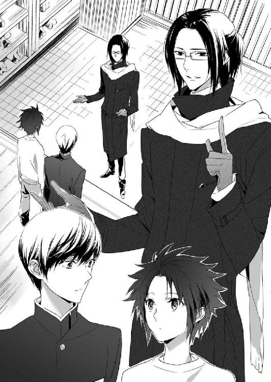
蔵田実親は名誉ある玄武の戦士で、その名に恥じるようなことは絶対にしない。
性格は胡散臭いが、アルバイトの仕事内容まで胡散臭くはないだろう。
しかし、とりあえず。
「どんなアルバイトですか？」
清志朗は仕事内容を訊ねる。
蒼司朗と並んで立ち、ちょっと保護者チックな清志朗に、くすっと蔵田実親は笑う。
「玄武神社の神官寮の掃除だよ」
帝都では、寮や住みこみで生活している者全員に春休みの帰省を奨励し、往復の交通費の支給をしている。
帰省の交通費が支給されるのはこの春休みだけだ。学生や修業中の者は、この機を逃さず皆ありがたく帰省している。
「業者を頼もうとしてあちこち問い合わせたんだけど、今日はもうどこもいっぱいでね。こういうときには、学生アルバイトだよね。神官寮の掃除には、蒼司朗クンならちょうど具合がいいんだ。うん、清志朗クンもね」
三月終わりの転居シーズン。
帝都では、三月のゴミ回収の最終日の夜を『蟲呼びの夜』に決めている。
今夜の『蟲呼びの夜』までに、ゴミ出しを全部終えて、綺麗にしておかなくてはならない。帝都の清掃業者は、どこもアルバイトを増員して、今日の夜までの作業完了を目指している。
普通の家や事務所ではなく、玄武神社の神官寮の掃除、となると、普通の清掃業者向けではない。
蒼司朗は神官候補生だし、清志朗は帝都城お抱え庭師である望月造園の子供だ。望月造園は『蟲呼びの夜』の後片づけと補修作業を行っている。『蟲呼びの夜』の後片づけができるのだから、玄武神社に来て清掃活動を行っても、問題ないだろう。
「断られると、とても困るな。急な頼みで申し訳ないのだけれど。どうだろう？」
にこりと蔵田実親は微笑んで、蒼司朗と清志朗に訊ねる。
先に釘を刺されてから頼まれると、嫌だとはとても言えない。
蒼司朗は柳生道場に稽古に行きたかったが、それは別に今日でなくてもいい。
神官寮の掃除は、今日の夜までに終わらせなければならない。
選択肢はない。
「────オレでよければ、お手伝いします」
「入学式の打ち合わせが終わったら、僕もすぐに行きます」
二つ返事で蒼司朗と清志朗は引き受けた。
「ありがとう、助かるよ。さぁ、善は急げだ。行こう、蒼司朗クン」
手を摑んで引っ張っていかれそうになり、蒼司朗は慌てる。
「奥庭の四神様を、部屋で寝かせたままですから......！」
目を覚ましたら、ピヨ四神は蒼司朗を探すだろう。何も言わずに置いていくことはできない。望月造園にいる蒼司朗以外の者は、ピヨ四神の姿を見ることができない。見えないことで、無礼を働くようなことになってはいけない。
「そういえば、いらっしゃらなかったね」
蒼司朗にくっついて、きょろんと顔を覗かせている姿が、今は見えない。
「断りもなく蒼司朗クンを連れていったら大変だ」
蔵田実親が玄武の戦士であっても、ピヨ四神のご機嫌を直すことはできない。
「神官装束に着替えたほうがいいですか？」
神官装束一式は、こちらに置いているものがあるので、部屋に戻るなら、急いで着替えてこられる。
法被は脱いだが、蒼司朗は見習い庭師として働いていたときの、庭作業用の格好だ。とても神社に作業しにいく格好では────。
気を遣う蒼司朗に、蔵田実親は笑う。
「いや、いいよ。今のままで。汚れるだろうから」
「そうですか？」
蒼司朗は神官装束で奥庭の庭作業をしている。汚れることに関しては、特別なことでも何でもないのだが、誘いに来た蔵田実親がそう言うなら、このままで構わないのだろう。
蔵田実親が許可したのなら、玄武神社で誰に見咎められようとも、蒼司朗が責任を負うことではない。
「じゃ、すみません、すぐに出かける準備してきますから......！」
蒼司朗は蔵田実親に一礼し、ぱたぱたと奥に走る。
玄関に蔵田実親を一人残すわけにもいかず、清志朗が間を繫ぐ。
「今年の『更衣の祓い』は、玄武神社ですね」
「うん。僕が仕切らせてもらうよ」
『更衣の祓い』とは、帝が冬の装束を春の装束に交換する、帝都の春の行事で『綿抜き』の衣替えのことだ。
帝の衣替えは春夏秋冬で行われるが、春の一回だけは、帝都の四神神社が交代で仕切り、儀式として行っている。
ばたばたと部屋に戻った蒼司朗は、学校ジャージを羽織って枝打ち斧を持ち上げる。
「ミギャ？」
お出かけの雰囲気を感じて、座布団の上で眠っていたピヨ四神がぱちっと目を開ける。
蒼司朗はピヨ四神のいる座布団の近くにしゃがむ。
「今からオレ、蔵田先輩の玄武神社に行って、掃除のお手伝いしてくるよ。途中で奥庭に寄れるから、そこでお留守番してるか？ 今夜は『蟲呼びの夜』だから、夕方には奥庭に迎えに行くけど......」
「ミギャ！」
「キュウ！」
「チュピ！」
「「（しゅー！）」」
どうするかと問いかけるより先に、ピヨ四神は蒼司朗に飛びついた。よじよじと移動して、いつもの居心地いい位置に収まる。
きゅんきゅんと甘えて身を擦り寄せられて、赤ちゃん動物のふわふわ柔らかくて温かい感触に蒼司朗は苦笑する。
「わかった。一緒に玄武神社に行こう」
（玄武神社なら、大丈夫だよな）
帝都の玄武神社なら、蒼司朗が掃除している間、奥庭の四神様を丁重に預かってくれるだろう。お菓子を出されて、もてなされすぎないかどうかが、ピヨ四神のお腹を心配する蒼司朗には気がかりなだけだ。
蒼司朗はピヨ四神を連れて、急ぎ足で玄関に出る。清志朗は靴を履いて、先に土間に下りていた。
「すみません、お待たせしました！」
「ミギャギャ」
「キュイキュイ」
「チュッチュピピ」
「「（しゅー）」」
蒼司朗を真似て挨拶するのが当然であるように、ピヨ四神にも声をかけられ、蔵田実親は頰を緩める。
「奥庭の四神様、ごきげんよう」
蔵田実親はご挨拶と同時に、右手から五つのキラキラを飛ばした。
神官として位の高い、四神の戦士が放つ清浄な気は、ピヨ四神にとって美味しいおやつだ。
ふわふわっと飛んできたキラキラに、ピヨ四神は小さな口を開けて、ぱくんと食いついた。
うまうまうま♡
靴を履いた蒼司朗に、清志朗は微笑みかける。
「それじゃ、行こうか。蒼くん」
「うん」
帝都学園高等部は、帝都城公園北東部にある。玄武神社に行く蒼司朗たちとは、帝都城公園まで道が一緒だ。
望月造園の仕事の移動は、大勢乗れるワゴン車やトラックだ。車の中で作業場所や仕事の割り振りをされるときには、窓の外に目をやる余裕はない。自分の車である小型のショベルカーで移動することもある蒼司朗は、安全運転を心がけて、車間距離をとり、しっかり前を向いて運転している。
忙しくしていて、ゆっくり周りを見る余裕のなかった蒼司朗は、近くのバス停まで歩いてバスに乗り、窓の外の雰囲気がいつもとどこか違うことに気づく。
「────そうか、ゴミ置き場がどこもいっぱいなんだ！」
粗大ゴミ・資源ゴミ・普通ゴミ......、帝都でのゴミ出しは各種分別して行われているが、そのそれぞれのゴミ置き場が、どこも山積み状態だ。
目を丸くしている蒼司朗に、清志朗は笑う。
「学校を卒業したり、修業を終えて、帝都を出ていった人たちが大勢いるからね。帝都の寮とか貸家の多くは家具付きだけど、何年か過ごしてると、荷物って案外増えちゃうみたいだよ。荷物が増えても、全部持って帰る人ってあまりいないみたいだ。リユースできるものは、業者が引き取ってくれるけど、それ以外は処分しちゃうんだね」
「ふーん」
そんなものかなという顔の蒼司朗に、蔵田実親は苦笑する。
「蒼司朗クンも、巌手を出てくるときに同じようなことをしてきたんじゃないのかい？」
蒼司朗は十月に生まれ育った巌手を出て、伯父一家のいる帝都に来た。
持ちものを整理し、住んでいた場所を引き払ってきたはずだ。
言われて、蒼司朗は窓の外を眺める。
「オレの場合は......両親がなくなったときに、もうほとんど整理しちゃってましたから。あんまり片づけるものなかったです」
蒼司朗は大怪我を負って入院し、リハビリしている間に、伯母の梢に巌手に来てもらって、業者を呼び、両親の荷物を片づけ、自分の荷物も整理した。
巌手城お抱え庭師の親方に貸し与えられている屋敷は、蒼司朗の父・望月右近が亡くなって、次の親方へと譲られた。怪我が酷く、巌手に残って治療を続けなければならなかった蒼司朗は、退院の許可が出て通院に変わったときにも、それまで住んでいた屋敷の、同じ部屋を使わせてもらっていた。
自分の夢を叶えるために生活拠点を移し、荷物を整理するのではなく、必要に迫られて、蒼司朗は荷物を片づけなければならなかった。
蒼司朗が生まれた頃からよく知っている庭師、望月右近の次の庭師の親方は優しい人で、蒼司朗にとてもよくしてくれた。
両親の死で家族を失い、自分を取り巻く環境はまったく変わってしまったが、蒼司朗は生まれ育った巌手のお城と、殿様や庭師たちみんなが大好きだ。
「ミギュ」
「キュウ」
「ピ」
「「（しゅー）」」
慰めるように、ピヨ四神に肉球タッチや鼻面ふんふん、すりすりぺろぺろされて、蒼司朗は微笑む。
「大丈夫だよ。オレの家は帝都にあるから」
家族として受け入れてくれる、伯父一家もいる。
４
帝都城北門でバスを降りた清志朗と別れ、蒼司朗は蔵田実親と玄武神社に向かう。
玄武神社は帝都の有名な場所なので、玄武神社前のバス停でバスを────。
「もう二つ先で降りるよ」
降車ブザーを押そうとした蒼司朗を、蔵田実親は止めた。
「ミギュ？」
「キュウ」
「ピ？」
「「（しゅー）」」
一緒に降車ブザーをぽちっと押す気分で、差しだした蒼司朗の右腕に集まり、期待に満ちた円らな目で蒼司朗の指先を見つめていたピヨ四神は、蒼司朗と同時に蔵田実親へと振り向く。
「二つ先、ですか？」
次が玄武神社前の停留所だが。
「二つ先にある門のほうが、寮に近いからね。前は歩きだったから、正面から入ったんだよ」
「あぁ、なるほど」
神官寮に近い境内の横手に小さな門があったと、蒼司朗は思い出す。
節分の前に川に落ちて濡れたとき、篠原勇輝と蔵田実親に連れられて玄武神社で風呂と着替えを借りたが、あのときは徒歩だったので、大回りの遠回りにならないよう、正面から入ったのだ。バスならほんの数分の違いだが、歩くと倍以上の時間がかかる。
蒼司朗は参詣に来たわけではないので、鳥居を潜ってわざわざ参道を通る必要はない。
帝都神社に神官修行に行くときと同じだ。
そして蔵田実親は、帝都の有名人だ。
バス停まで歩いたときも、バスに乗ってからも、蒼司朗は同行する蔵田実親に、ちらちらと視線が送られるのを感じていた。
実家の玄武神社に正面から入っていったなら、参詣客に取り囲まれるのは必至だ。
参詣客へのサービスは大切だが、今日はできるだけ急いで神官寮の掃除をしてしまわなければならないので、ここで足止めを食うわけにはいかない。
別の乗客が玄武神社前の降車ブザーを押し、その音に蔵田実親は、はっと顔を上げる。
「あ......、奥庭の四神様」
蒼司朗一人なら、横手の門から神社に入っても何の問題もないが、奥庭の四神様は正面から入るのが正しい。
御前試合の練習で奥庭の玄武様を玄武神社にお迎えしたときには、輿を用意し、恭しく送り迎えしていた。
「蒼司朗クン、やっぱりキミだけ先に降りて────」
「大丈夫ですよ、蔵田先輩」
蔵田実親の考えたことがわかって、蒼司朗はにこっと笑う。
「オレ、帝都神社に入るときも、いつも社務所に一番近いところから入ってますから」
移動距離をできるだけ短くしないと、蒼司朗は学校に遅刻するし、食事や休息の時間を少しでも多くとりたい。
蒼司朗はピヨ四神を連れているときも連れていないときも、正面の参道を通らずに、近道するようにして帝都神社の社務所に行く。蒼司朗にくっついているピヨ四神は、正面から神社に入らなくても不満がある様子はまったく見せない。
「それは助かるね」
蔵田実親は安心したように微笑んで、玄武神社前の次の停留所を過ぎてから降車ブザーを押した蒼司朗と一緒に、目的の停留所でバスを降りた。
小さな橋を渡って、蔵田実親と一緒に蒼司朗は玄武神社に入る。
（別のところから入ると、違って見えるな）
新鮮な気分で、蒼司朗は頰を緩める。
玄武神社には初詣にも来ている。
「先輩、今日掃除するのは、前にお風呂を借りたことのある、あの神官寮ですか？」
「うん、そう。住みこみの神官で帰省していない人は、『更衣の祓い』の準備で出払ってるから、今は誰もいないよ。だから物音も何も気にしないで、片づけてくれたまえ」
神官寮は参詣客が立ち入る場所より、少し奥にある。少々ばたばたしても、神社の仕事や、参詣客の迷惑にはならない。
神官寮の掃除に対する蔵田実親の言い方は、他人事だ。
「えーと、先輩......」
一緒に掃除する気は、ナシですか？ 訊ねる前に、蔵田実親は言う。
「アルバイト代は、神官候補生の金額規定でいいかな？ それとも、奥庭のお庭番様の────」
「神官候補生で！」
蒼司朗は蔵田実親の言葉を遮る勢いで言いきる。
（奥庭のお庭番の規定でなんて、働けないよ......！）
蒼司朗は奥庭のお庭番に任じられているが、実質はただの庭師であり、ちっちゃくなってしまった奥庭の四神様のお世話係だ。
神官としては、まだまだ見習いで位なんてないし、四神変化して天の戦士として蟲を浄化した実績はあっても、いつでも自在に四神変化できるわけではない。ぎりぎりの綱渡り状態での四神変化が、どうにかできるだけだ。
今日は玄武神社に奥庭のお庭番としての働きをしに来たわけではない。場所が玄武神社の神官寮という、ちょっと特別な場所であるだけで、やることはただの掃除だ。
（ってか！）
「蔵田先輩、オレ、べつにバイト代いらないですよ？」
学校の先輩が困っているのだ。お金をもらうようなことではないと、蒼司朗は思う。
帝都に来て、ようやく半年になった蒼司朗としては、蔵田実親のような帝都の有名人に頼ってもらえて、むしろ光栄だ。
蒼司朗の言葉に、蔵田実親はきょとんと目を瞬く。
「そう、かい？ 片づけを頼んで帰った人から、徴収してあったんだけど。じゃあ、残しておいてもややこしいから、蒼司朗クンのアルバイト代は、仕方ないから僕がいただいて、景気よくぱぁっと使っちゃおうかな。後腐れないお金があるっていいよねぇ」
お気楽に笑った蔵田実親に、ひくっと蒼司朗は顔を引きつらせる。
「前言撤回して、全額きっちりいただきます......！」
蔵田実親の態度に、知り合いだからとサービスするのが馬鹿らしくなった蒼司朗は、硬い声で断言した。
片づけのために、お金を置いていった人がいるなら、話は別だ。もらわないと、無駄遣いされるだけだ。
「うーん、まぁ、ごもっとも？」
もともとアルバイトを誘いかけたのだし、蒼司朗の労働の正当な報酬なので、前言撤回しようとも蔵田実親に異論はない。
「奥庭の四神様は、蒼司朗クンの仕事が終わるまで、社務所でお待ちください」
「「（しゃーしゃー！）」」
蔵田実親の言葉に、チビ玄武が不満を訴えた。他のピヨ四神も不満そうな顔で蔵田実親を見つめる。
「ギュココココ」
「キュオ」
「チュピチュ」
ピヨ四神の言葉は、四神の戦士の蔵田実親にも通じない。だが、様子から何を言いたいのかは推測できる。
「玄武神社の清水とお菓子を用意してあるんですけど？」
ちらっと視線を流した蔵田実親に、一瞬ピヨ四神は誘惑されかけたが、ふ、ふーんだとばかりに横を向く。
明らかに強がっている様子のピヨ四神に、蔵田実親は苦笑する。
「あれ？ いりませんでした？ 余計なことでしたか、すみません」
ピヨ四神は食い意地が張っているとわかっていて、下手に出るふりをしながら意地悪する蔵田実親に、蒼司朗は言う。
「掃除が終わってからいただきます」
ピヨ四神のために支度してもらっていたものなら、いただいて帰るのが、ピヨ四神にも玄武神社にもいいはずだ。
厳かに言った蒼司朗に、ぱぁっとピヨ四神は顔を輝かせ、蔵田実親は恭しく頷く。
「奥庭の四神様のお望みのままに」
忙しそうに早足で社務所から出てきた神官が、玄武神社に戻った蔵田実親に気づいた。
「────実親様......！」
玄武神社の神官は、武闘派のいかつい系ばかりだ。
蒼司朗にくっついているピヨ四神は、体格のいい男性神官を見て、珍しがってあちこち見回すのをやめて、急いで頭を引っこめて隠れた。
近づいてこようとした神官は、蔵田実親と一緒にいるのがピヨ四神を連れた蒼司朗であることに気づき、慌てて足を止める。
奥庭の四神様とお庭番に遠慮して、側には寄れないが、神官が何か言いたそうなのは雰囲気でわかる。
「すぐ行きます。ちょっと待っててください」
一緒に掃除するどころか、蔵田実親はとても忙しいらしい。
（『更衣の祓い』の前日だし、今夜は『蟲呼びの夜』だもんな）
そして蔵田実親は玄武の戦士なのだし、多忙で当たり前という条件が揃っている。
蒼司朗を頼ろうと思ったから、蔵田実親は貴重な時間を割いて、望月造園までわざわざ自分で足を運んだのだ。
蔵田実親に言われた神官は、了解したと、恭しくお辞儀し、蒼司朗を連れて神官寮に向かう姿を見送った。
神官寮がすぐ近くに見える場所まで来て足を止め、蔵田実親は蒼司朗に言う。
「では、ゴミ出しと掃除をよろしく頼むよ。入り口の鍵は開いてる。『更衣の祓い』の準備に出ている神官には、扉を閉めて出るように言ってあるから、扉が開いている部屋には勝手に入って構わないよ。道具は、神官寮の用具室にあるものを、どれでも好きに使っていいからね」
「はい」
「ゴミ出しをする場所はわかるかな？ さっきバスで通った道にあったんだけど」
言われて、蒼司朗は記憶を探る。はっきりと覚えてはいないが────。
「わかると思います」
バス通りに面したところにあったのなら、ゴミを持って少し歩けば見つかるはずだ。
蔵田実親は蒼司朗に頷く。
「わからないことがあったら、社務所にいる者に聞いてくれたまえ。必ず誰かいるから。会ったことのない神官でも、蒼司朗クンは有名人だから大丈夫だよ」
「あ、はい」
（こいつら連れてるだろうしな）
神官にはピヨ四神の姿が見える。
御前試合で自軍の大将と一緒に奮戦した、奥庭の玄武様を連れているのだから、玄武神社の神官は親切にしてくれて当たり前だと蒼司朗は考える。
一気に神官たちが友好的になった御前試合の騎馬戦での奮闘や、個人賞を受賞した栄誉のことは、蒼司朗の意識にない。
蒼司朗は知らなくても、帝都にいる神官は皆、奥庭のお庭番に就任した蒼司朗の顔や素性をよく知っている。望月造園の庭師見習いとして働いている様子も、見られている。
小柄な蒼司朗が、自分の身長ほどもある長い枝打ち斧を常に持ち歩いている姿も、実は悪目立ちしているのだが、蒼司朗はよくわかっていない。
蒼司朗は本人が思っているよりも、ずっと有名人なのだ。
「終わったら、社務所にひと言言ってくれたまえ。奥庭の四神様のお菓子とアルバイト料を預けておくからね」
言いたいことを言って、蔵田実親は蒼司朗の連れている奥庭の四神様に会釈し、足早に立ち去った。
（奥庭の四神様のお菓子があるっていうことは、こいつらを預けられる場所が用意してあるってことだよな）
掃除に付き合うのに飽きた様子だったなら、埃を被らないように、そこで休ませておけばいいだろう。
「じゃ、行こうか」
「ミギャギャ」
「キュイキュオ」
「チュピピピピ」
「「（しゃー）」」
気合いの入った様子を見せるピヨ四神に微笑んで、蒼司朗は玄武神社の神官寮に向かう。
一度入ったことのある建物なので、まったく知らない場所ではない。
「掃除に来ました！ 失礼します！」
誰も中にいないと聞いていたが、蒼司朗は入り口の前で大声で言って知らせ、大きく身体を折ってお辞儀してから、神官寮の戸を開ける。
神官寮の中は、プチゴミ屋敷だった。
「............」
靴を脱いで中に一歩上がったところからわかる、廊下に無造作に放りだされているゴミに、蒼司朗は啞然とする。
「......掃除代を徴収、ね......」
温い笑みを浮かべて、どうしてこうなったのか、蒼司朗は事情を察する。
ゴミ出しには、ゴミの種類によって決まった曜日と、ゴミ出し時間がある。
『蟲呼びの夜』と『更衣の祓い』の前という今日は、すべてのゴミが回収される年に一度のゴミ回収日だが、ゴミ出しをしていいのは、明るくなってからだ。
深夜やそれ以前のゴミ出しをしてはならないと、帝都の規則で決められている。
時間外のゴミ出しは、ご近所さんからチェックを受け、厳重注意される。町内会の決まりごとは、破ると相当怖い。
帰省したり、短期の神官修行を終えて寮を出る者は、その決まった日にゴミ出しができないまま、帝都の玄武神社を去ることになる。
だから後始末をお願いする意味で、掃除代を置いていくのだろう。
「ギュコココココ......」
「キュオー」
「ピ」
「「（しゃー）」」
ピヨ四神は、こんなふうに汚い場所は嫌いとばかりに、すぽんと顔を引っこめた。
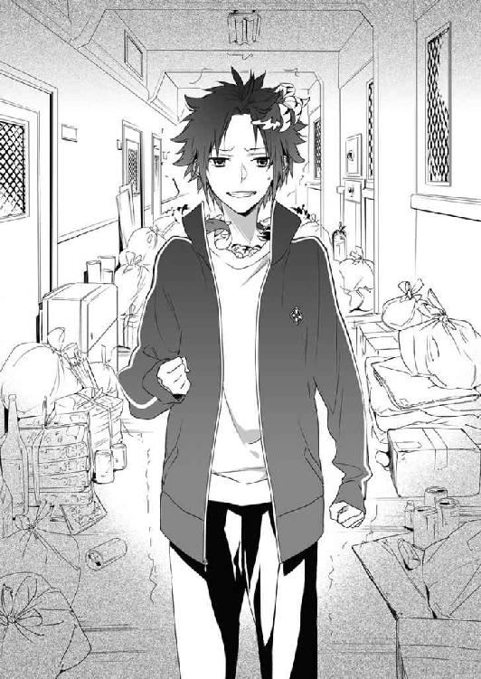
「ちゃんと前もって業者頼んでくれよ......！」
まさかここまで酷いとは思わなかった蒼司朗は、思わず壁に手を突き、げんなりする。
「────ここだけかも、しれないよな、うん」
廊下にゴミ袋や処分品が放置されているのは。
声に出して言うことで、自分を元気づけて、蒼司朗はまず神官寮の全階を見ておくことにする。
一縷の期待を込めたのだが。
「............」
どの階も似たり寄ったりということがわかっただけだった。
通常、神官寮は宿泊する人が入れ替わるので、新しく来る人に対して、印象をよくするために綺麗にしておくものなのだが、今のこの時期は出て行く人はいても、入ってくる人はいない。
見栄を張らないと、人間は堕落する。忙しくて掃除できなくても、仕事はできる。その典型例が、蒼司朗の目の前にある。
蔵田実親は生徒会役員として尊敬されていたし、見た目の印象で、緻密に計算し、神経質な性格なのかと蒼司朗は思っていたのだが、けっこう大雑把でいい加減だ。
「気楽に『いいですよ』とか、言ってる姿が見える気がする......」
格好をつけて、安請け合い。
「あーのーひーとーはー......！」
ぷるぷると震えながら、蒼司朗は拳を握り締める。
いや、まぁ、がんばれ？ とでも言うように、ピヨ四神が顔を引っこめたまま、蒼司朗に肉球タッチや、鼻面ふんふんする。
こんなにスゴイことになっていようとは思わなかったが、引き受けてしまった以上、投げだすわけにはいかない。
蒼司朗は、ひとつ息を吐き捨てる。
「あとから清ちゃんも来てくれるって言ってたし......！」
清志朗が一緒にいてくれるなら、蒼司朗は目の前にどんな困難があっても大丈夫という気持ちになる。
「────まず、ゴミ出しして、それから、掃き掃除と拭き掃除だよな」
作業の行程としては、何ということもないのだが、とにかくゴミの量がハンパない。
「帰って、ショベルカー取ってこよう！」
神官寮のある場所から外の通りまでは、いくらか距離があるし、とても手で運びきれる量のゴミではない。蒼司朗の小型ショベルカーなら、一度にたくさんのゴミを運べるから、数度往復するだけで何とかなるだろう。
望月造園まで急いで戻って、小型ショベルカーを持ってきたほうが、絶対に早いし体力的にも楽だ。
「お庭番、望月蒼司朗、参る！」
気合いを入れ、蒼司朗は入ったばかりの神官寮を出た。
５
枝打ち斧を持って玄武神社の神官寮から走りでた蒼司朗は、トンボ返りするように、やってきたバスに乗り望月造園に戻る。
「えーっと、ゴミ置き場......！」
車窓から、玄武神社の近くのゴミ集積場の確認をしておくことも忘れない。
「玄武神社の向かい側、だよな、たぶん」
バス通りであるこのあたりの大きな道路は、玄武神社の周りに沿っている。
玄武神社は観光客も大勢参詣する帝都の名所なので、玄武神社側の塀に生活感溢れるゴミの集積場は設置しないだろうと思える。
玄武神社に面した道路を挟んだ向かい側には、土産物屋や飲食店が軒を連ねている。業務的にも一般家庭よりも多くのゴミが出るだろうから、そのあたりの道路を少し入ったところに集積場があるのではないかと、蒼司朗は推測する。
「ミギャギャ！」
胸元から顔を覗かせて、発見！ と鳴き声をあげたチビ白虎の視線を、蒼司朗は追う。
「あ、あった！」
やはり推測どおり、裏通りを少し入った場所に、ゴミの集積場があった。
（うん、ショベルカーを使うなら、やっぱりちゃんと場所を知ってないとね）
細い道は一方通行で戻れないこともあるし、ゴミを積んでうろうろ徘徊は、あまり見目のいいものではない。さくさく搬出して置いてこなくては。
「キュイキュイ」
蒼司朗の首の後ろから顔を覗かせたチビ青龍が鳴き、頭の上のチビ朱雀が、手羽をぱたぱたと動かす。
「チュチュピチュ」
「「（しゃーしゃー）」」
蒼司朗のジャージのポケットから半身を出したチビ玄武のチビ蛇が、鎌首を持ち上げ、小さな舌をちろちろさせて、あっちと指し示す。
「うんうん。あれだよな」
数カ所の集積場を、ゲームでも楽しむようにピヨ四神と一緒に見つけあって、蒼司朗はその場所をしっかり記憶しておく。
出かけたと思ったらすぐ帰って来た蒼司朗に、近所まで買い物に出て、蒼司朗よりもひと足早く帰宅した伯母の梢は驚く。
「あらあら、蒼ちゃん、何か忘れもの？」
「うん、まぁそんなとこ！」
ばたばたと車庫に走った蒼司朗は、黄色い安全ヘルメットを被り、キャタピラや車体の屋根の上にいた猫をどかして、自分のショベルカーに乗る。
「いってきまーす！」
蒼司朗の大きな声に、梢は急いで玄関の外に出る。
「はい、いってらっしゃい。気をつけてね」
切り火を切って見送ってくれた伯母に会釈して、蒼司朗は望月造園を再度出発する。
小型ショベルカーを安全運転して玄武神社に向かった蒼司朗は、先ほどと同じように大鳥居のある正面ではなく、横手から玄武神社の境内に入り、神官寮に向かう。
神官寮の前に小型のショベルカーを停めた蒼司朗は、運転席に枝打ち斧を置いて降りる。
「失礼します！ 掃除します！」
やはり大きな声で言って一礼してから、蒼司朗は神官寮に入った。
「っしゃあ！ 始めるぞ！」
プチゴミ屋敷と化した神官寮を前にして、蒼司朗は大きな声を出して気合いを入れる。
作業開始の蒼司朗の衣類や髪の間から、ピヨ四神がぴこんと顔を出す。
「（ミギュギュ）」
「（キュイ）」
「（ピピチュ）」
「「（しゅー）」」
何だか鳴き声が不明瞭だなと思って蒼司朗が目をやると、ピヨ四神は三角巾にマスクという、お掃除バージョンになっていた。
年末の大掃除のときに、ピヨ四神のために伯母が作ってくれたものだ。
「......お前ら、準備いいなぁ」
ちゃっかりさんのピヨ四神に、蒼司朗は感心し、破顔する。
「皆、まだちゃんと持ってたんだ？」
大掃除のあと、蒼司朗はピヨ四神が身につけていたちっちゃな三角巾とマスクを探したのだが、いったいどこにやったのだか見つからなかった。
落としてなくしてしまったのかと蒼司朗は残念に思っていたが、ピヨ四神は伯母の温かい思いやりのこもった頂きものを、しっかりキープしていたようだ。
どこにどうやってキープしていたのかは謎だが、ちびっちゃくても霊験あらたかな神様なので、どうとでも融通がきくのに違いない。
「伯母さんが知ったら、きっと喜ぶな」
くすくすと笑いながら、蒼司朗はピヨ四神を見習って、ハンカチでマスクを作り、埃を吸いこまないようにする。
蒼司朗の連れている、ちっちゃくて可愛い四神様は、伯母の大のお気に入りだ。おおらかな愛情で蒼司朗を見守ってくれている、優しくてお茶目な伯母が、ピヨ四神も好きだ。
「カメラ持ってなくて、残念」
こんな姿だったんだよと見せれば、伯母はもっと喜ぶのだろうが、蒼司朗は自分のカメラを持っていないので、写真を撮れない。
公儀隠密は、この玄武神社のどこかにもいるのだろうが、わざわざ呼んで、写真を撮ってもらうほどのことではない。
用具室に向かった蒼司朗は、手順を口に出して確認する。
「一番はゴミ出し！ そしてゴミを運びだす！ そのあと、掃き掃除と拭き掃除！ 終わったら社務所！」
たいした作業行程ではない。それだけできれば、神官寮に蟲が巣くうという不祥事は起こらないだろう。
「まず、ゴミ出しのための、ゴミ袋確保！」
ここからスタートだ。
廊下に出されている、中身の大きさに合わせた様々な大きさのゴミ袋を、まとめて大きなものにして、集積場に運ばなければならない。
「ミギャギャ！」
用具室の棚に袋の束を見つけて、胸元から顔を出しているチビ白虎が鳴いた。
「あー、その大きさだと部屋のゴミ箱にセットするやつだよな。もっと大きいやつがいいな」
袋が小さいからと蒼司朗に却下され、チビ白虎はしょぼんとする。
「ミギュン......」
ちゅーっと小さくなって、引っこんでいこうとするチビ白虎の頭を、蒼司朗は撫で撫でする。
「いやいや、ビャク、ちょっと惜しかっただけだから」
「ミギュ」
蒼司朗に可愛がってもらったチビ白虎はちょこっと気分を浮上させて、目のところまで顔を出す。
（具体的に教えたほうがいいな）
役に立とうとがんばってくれるピヨ四神を傷つけないようにと、蒼司朗は考える。
「えーっと、見覚えあると思うんだ。ゴミ置き場に持っていくゴミは、印刷している文字の色と柄の決まってる大きな袋なんだけど......」
バスの中からゴミの集積場を見つけたとき、そこにあったゴミ袋は、どれも同じデザインのものだった。
帝都には帝都指定のゴミ袋がある。大量のゴミを、指定されたもの以外の袋で運ぶのは、ご近所的にも問題アリだ。玄武神社の評判を落とすような真似は避けたい。
「チュピチュピ！」
頭の上のチビ朱雀が、目的のもの発見とばかりに鳴いた。手羽でびしっと指し示したほうに、蒼司朗は目をやる。
「あぁ！ そうそう、これ！ 見つけてくれてありがとう、スー」
「ピピチュ、チュピチュピ」
チビ朱雀は、どういたしましてと言うように、朗らかに囀る。
帝都の指定ゴミ袋の束を見つけた蒼司朗は、そこから数枚もらって、用具室を出た。
「んじゃ、上から順番にいくぞ！」
蒼司朗は神官寮の三階に上がり、その廊下から順番に、放置されていたゴミを拾っていく。しかし、全部拾うわけではない。
「キュイ？」
選り好みするように、ゴミを拾ったり拾わなかったりする蒼司朗に、首を傾げたチビ青龍が鼻面を押しつける。
「ん？」
身体のあちこちにくっついているピヨ四神に、円らな瞳で見つめられ、あれは？ それは？ 拾わないの？ と前肢や首で指し示されて蒼司朗は笑う。
「あぁ、分別してるんだよ」
帝都のゴミは、普通ゴミ、資源ゴミ、大型ゴミに分別して捨てることになっている。集積場もそれぞれ別だ。
「ゴミの種類で分けて拾ってるだけだから。残りもちゃんと拾うよ」
蒼司朗はいっぱいになったゴミ袋の口を結んでその場に置いて、新しいゴミ袋で次のゴミを拾っていく。廊下の端まで行って、印刷された文字の色の違うゴミ袋に替えて、残してきた、種類の違うゴミを拾っていく。
「それぞれ、たいしたゴミじゃないんだけどな......」
数が集まると、重労働だ。
そして扉の開けられていた部屋には、宴会でもやったのか、酒や食べものを零して汚し、煙草の焦げ跡のある布団や座布団があったりして、雑に置かれていたこれらも、すべて処分品だとわかった。
襖や障子、畳の一部がないのは、張り替えや修理に出されているからだろう。
帝都指定のゴミ袋にまとめたゴミを、次々に神官寮の外に運びだす。
「ショベルカー持ってきて、ホントによかった......」
途方もない量のゴミ袋を、蒼司朗はショベルの中に山積みにして、玄武神社から運びだした。分別した数だけ、きっちりと往復だ。
今日は夕方ぎりぎりまで、ゴミの回収車が来る。回収後に、まだ出したいゴミが残っていたなら、連絡して回収に来てもらうことになっている。順路を巡ってくる回収車が、集積場に来る少し前に、何とかゴミ出しを全部終えられた蒼司朗は、ほっとした。
「掃き掃除のゴミは......、間に合わなくても、どうにかなるよな」
掃き掃除で集まるゴミは、室内の埃の塊だ。ゴミ出ししなければと、焦るほどのものではない。回収車が集積場のゴミを持っていくのに間に合わなければ、境内の落ち葉と一緒に焼いてしまえばいいだろう。
ゴミ出しをして、ひとつ終えた気分になってショベルカーを降りた蒼司朗は、少し向こうの境内に落ちているピンク色のものに気づく。
「あれ？」
何か、誰かの落としものだろうか。
小走りに近寄った蒼司朗は、それを見て、首を傾げる。
「ボール？」
幼い子供が好んで遊ぶような、カラーボールだ。
蒼司朗はしゃがんでボールに触れる。
「何で、こんなもの......」
神官寮はちょっと奥まった場所にあり、参詣客が足を運ぶようなところではない。
（子供が遊び場にしてたのかな？）
神社の境内で近所の子供が遊ぶのは珍しいことではないが、大事な遊び道具であるボールを忘れて帰るなんて。ボールには、ペンで何か書かれていたが。
「うーん......」
擦れて半分以上消えていて、文字らしきものは読めない。持ち主がわかれば届けてあげられるのだが、これではちょっと無理な感じだ。
（社務所に届けておけばいいかな）
玄武神社の神官なら、これで遊んでいた子供に、心当たりがあるかもしれない。
しゃがんで、拾い上げたボールを見つめていた蒼司朗のお尻に。
カプ！
「いっ!?」
地面に近いところに軽い衝撃を感じた蒼司朗は、びっくりして立ち上がる。
何ごとかと、振り向いた蒼司朗が見たのは、ぽってぽってと慌てて逃げていく、数匹の小さな子犬だ。足が短くて、お尻が重たい、もちもちした動きから、生まれてまだそれほど経っていないことがわかる。
追いかければすぐに追いつくだろうが、それをすると子犬を精神的に追い詰めそうなので、やめておいたほうがいいだろう。怖い思いはさせたくない。
蒼司朗が追いかけなければ、見つかっちゃった、それ逃げろ、という悪戯好奇心な感じで、切迫した恐怖はないはずだ。どこに行くのかは、一方向に向かう子犬たちを眺めていればわかる。
「────キャン」
足元で小さな鳴き声がして、びっくりして目をやった蒼司朗は、子犬が一匹、ひっくり返っているのを発見する。
「......お前か」
お尻に感じた軽い衝撃の犯人を見つけた蒼司朗は、しゃがんで子犬を抱き上げた。落ちたのにびっくりして、固まっているようだ。
「大丈夫か？ いつまでも食いついてるからだぞ？」
立ち上がったときに何かくっついているような気がしたのだが、まさか小犬が自分のお尻にぶら下がっていたとは思わなかった。
「怪我、してないよな？」
蒼司朗は拾ったボールを持ったまま、子犬を握り潰さないようにそっと持ち上げて、大丈夫かなと見回す。
「ミギャギャ」
「キュイ」
「チュチュピ」
「「（しゃー）」」
蒼司朗にくっついているピヨ四神も、どうだろうどうだろうと、蒼司朗の手の中の子犬を見つめる。
「ミギャ」
「キュウ」
「チュピ」
「「（しゅー）」」
「うん、平気みたいだな」
まだぽや毛の子犬は、どこもかしこもふわふわふにゃふにゃ柔らかい。軽くて柔らかい赤ちゃんなので、怪我はなさそうだ。蒼司朗が指先で、ちょいちょいと撫でてやると、子犬はくすぐったそうに目を閉じた。
「ったく、心配させんなよ。舌しまえ？ 出たまんまだぞ？」
蒼司朗の手の中で、ちろちろちろっと短い尻尾を振った子犬は、近くにあったピンクのボールを、がしっと四肢でホールドした。
動作にまったく迷いがなく、その大きさのボールで遊び慣れている感じの子犬に、蒼司朗は目を瞬く。
「あ、え？ これ、お前の？」
「なぁにサボってんだ。っつーか、ホント、マジでオメー、ちっけぇモン好きだな」
そして異様に馴染みのいいところが、何とも。
篠原勇輝の呆れ声に、蒼司朗は顔を上げる。
「あれ？ 篠原。どうして？」
「バーロ、テメーを手伝いに来たんじゃねーよ。『更衣の祓い』の連絡事項だよ」
「すぐそこで会ったんだよ」
清志朗は入学式の打ち合わせが終わったので、来てくれたようだ。
篠原勇輝は帝都学園高等部、同学年の生徒であり、帝都の白虎神社の神官で、帝都を守護する白虎の戦士だ。
話のよく見えない蒼司朗に、清志朗は教える。
「『更衣の祓い』は、帝都の四神神社で時計回りに、毎年交代で行ってるんだ」
帝都の西にある白虎神社の次は、帝都の北の玄武神社が『更衣の祓い』を受け持つことになる。
「掃除、終わったのか？」
「ゴミ出しまで。掃き掃除と拭き掃除はこれからだよ」
篠原勇輝に答えてから、蒼司朗は質問の意味を悟った。
「これは......、コイツは、今、うろうろしてるのを見つけただけだよ。兄弟で遊んでたみたいだけど、コイツだけがオレの尻に食いついちゃって、立ち上がったらぶら下がって落っこちたんで、大丈夫かなって拾っただけでさ......！」
頼まれていた掃除をサボって、子犬と戯れていたのではないと、説明する。
「......蒼くんのお尻に、子犬......」
呟いた清志朗に、篠原勇輝は具体的にその姿を想像してしまった。
かぷっと蒼司朗のお尻に食いついて、ぷらん、とぶら下がった子犬────。
「ぶぁははははは！」
爆笑した篠原勇輝に、蒼司朗は赤くなる。
「な、何だよ!? 笑うなよ！」
「む、無茶言うな......！」
笑いながら腹を押さえた篠原勇輝は、目尻に滲む涙を指で拭う。
四肢でボールを抱えてご機嫌の子犬を手に乗せ、拗ね顔の蒼司朗に、清志朗は苦笑する。
「馬鹿にしたんじゃなくて、可愛いからだよ」
とってもリリカル♡
しかし『可愛い』は学年一背の低い、ミニマムな蒼司朗にとって、褒め言葉ではない。
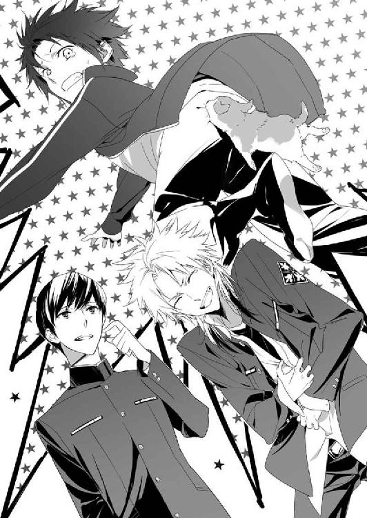
６
「蒼司朗クンのお尻は、よほど美味しそうだったんだろうね。お尻で子犬を釣り上げるところなんて、初めて見たよ」
別方向から来た蔵田実親が、蒼司朗たちに近づきながら、くすくすと笑った。
「墨と紙ならすぐに支度できるから、記念に魚拓......いや、犬拓か。とっておくかい？ しかし、本当に......！」
くすくすと笑って蔵田実親は肩を震わせる。
奥庭のピヨ四神てんこ盛りの蒼司朗は、ちっちゃいものパラダイスの状態だ。
ちっちゃくてキュートなものが、蒼司朗にはどうしてこうも問答無用で似合うのか。
「そんな記念いりません！」
ボールをホールドした子犬を抱っこして、振り向いた蒼司朗は蔵田実親にきっぱり言う。
「キャンキャンキャン」
蒼司朗の大声と一緒に遠吠えするように、抱えられている子犬が鳴いた。
ステキなコンビネーションだ。
「ぐはははははは！」
篠原勇輝が爆笑し、清志朗は口を結んで横を向いた。蔵田実親も肩を震わせて笑っている。
「あのなぁ......」
がっつり存在を主張する子犬に目をやった蒼司朗は、はふはふと機嫌のよさそうな様子を見て、ふうと息を吐く。
動物の赤ん坊に何を言っても無駄だ。キツイ態度をとったように見えると、苛められていると勘違いするので、感情的になってはいけない。
「ミギャギャ」
「キュイ」
「ピチュン」
「「（しゅー）」」
生温かく応援するように、ピヨ四神は蒼司朗に肉球や鼻面、手羽でタッチした。
「くら、蔵田センパイ......、これ、去年の『更衣の祓い』の資料です」
笑いすぎて震える腹を手で押さえながら、篠原勇輝は蔵田実親にファイルを差しだす。
「ありがとう、勇輝クン。助かるよ」
ファイルを受け取って蔵田実親は微笑み、蒼司朗に訊ねる。
「神官寮の掃除のほうはどうかな？ 犬を釣って遊んでるぐらいだから、終わったのかい？」
「ゴミ出しが終わったところです。犬と遊んでたんじゃありませんよ。落としものらしいボールを見つけたら、近くに犬がいたんです」
「蒼司朗クンの犬じゃないんだ？」
蔵田実親は目を丸くする。
あまりに息ぴったりだし、ミニマム連合でお似合いだったので、蒼司朗の犬なのかと思って、微笑ましく見ていた。
意外でびっくり、という顔の蔵田実親に、蒼司朗はちょっと口を尖らせる。
「オレ、動物なんて飼えないですよ」
動物が好きそうだし、赤ちゃん動物とじゃれて無邪気に遊んでいる姿や、ちびっちゃいのに群がられて一緒に仲良くお昼寝している姿が目に浮かぶようだが、蒼司朗は奥庭の四神様のお世話で、手一杯だ。
「うちにペットはいませんから」
蒼司朗には個人的事情もあるが、清志朗は望月家のこととして、締めくくる。
蒼司朗は周りを見回す。
蔵田実親が知らない犬だということは────。
「こいつ、蔵田先輩のところの犬じゃないんですね。そこらに飼い主がいるんじゃないですか？」
「馬鹿チビ。犬を連れて、玄武神社にお参りに来る罰当たりなんか、いるかよ......！ マジありえねー！」
篠原勇輝に蔑まれ、蒼司朗はむっとする。
「いるかよって言われても、実際に犬がいるんだから仕方ないじゃん......！」
辛辣に篠原勇輝に罵倒されてから、冷静になって考えて、蒼司朗はここが公園などではないことを、はっきりと認識する。
（そうか、お散歩コースにはならないんだ）
帝都城公園にある帝都神社と帝都城下の四神神社は、遠く地方から遙々と参詣に訪れる者が大勢いる有名な観光名所であり、神聖な場所だ。
動物に人間の事情は通用しない。犬を連れて入ったならば、そこをお散歩コースのひとつとして覚えた犬は、縄張り主張のマーキングをするし、もよおしてくれば大きいほうもする。重要文化財や、遠方からの観光客が行き交う場所だろうが、犬には関係ない。
わざわざ禁止事項として提示されるまでもなく、帝都在住の者は飼い犬を神社に連れて入らない。
しかし絶対に飼い犬が入りこまないとは断言できない。人間が連れて入らなくても、犬が勝手に入る場合もある。
「僕と篠原くんは、飼い主らしい人は誰も見てないよ」
清志朗は蒼司朗が抱っこしている子犬を覗きこむ。
「はぐれて迷いこんじゃったのかな？」
「そういうのじゃないと思うよ。兄弟がいたから」
蒼司朗の言葉に、蔵田実親は驚く。
「兄弟？ 一匹じゃないのかい？」
「えぇ!? 何だよ、そりゃ！」
「ちょっ！ 大声出すなよ......！」
篠原勇輝にまで大声を出され、蒼司朗はびくっと震えた子犬を、よしよしと宥める。大事に抱っこされて落ち着いた子犬は、蒼司朗の指を銜えて、あぐあぐと口を動かした。まだ歯がない赤ん坊犬なので、甘嚙みされてもくすぐったいだけだ。
子犬に好きなようにさせながら、蒼司朗は言う。
「逃げていく後ろ姿をちらっと見ただけだけど、他に三匹いたよ」
「三匹......」
蔵田実親は、むっと眉を顰める。篠原勇輝も神妙な表情になる。
「おい、そいつらどこ行った？」
声を低めて訊ねられ、子犬を守るように蒼司朗は思わず半歩退く。
「どこに行ったかまでは、はっきり見てないけど、逃げていったのはあっちのほう」
蒼司朗が顔を向けたほうに、蔵田実親と篠原勇輝は目をやる。
子犬の姿は見えない。
そちらにあったのは、一棟の建物だ。
「────書庫っスか？」
呆然と呟いた篠原勇輝に、蔵田実親は頷く。
「盲点というのは、そんなものだよ」
「ちょ......！ 篠原！ 蔵田先輩！」
砂利を踏みしめて、ざくざくと歩きはじめた篠原勇輝と蔵田実親を、蒼司朗は追う。
「どうしたんですか!?」
何だか様子がおかしい。
訳がわからないまま二人のあとを追う蒼司朗の横に、清志朗も並んで続く。
書庫は玄武神社に関連する書物を保管している、古い高床の建物だ。
神官寮に近いところにあるあの書庫には、主に玄武神社の新人神官が修行に使う写本や巻物などが収められている。
今のこの時期は、蔵書整理や写本の入れ換えが行われるので、毎日何人もの神官が頻繁に出入りしている。
ついさっきも、蔵田実親は書庫から出てきた神官と擦れ違っている。
書庫に近づいた篠原勇輝と蔵田実親は、身を屈めて床下を覗きこむ。
床下の暗がりで、気配が動いた。
「────いるっスね」
「いるね。親子で、四匹か」
ふむ、と蔵田実親は難しい顔になる。
「キャン」
「下りるの？」
抱えていた子犬が鳴いたので、蒼司朗はしゃがんで、子犬をボールごと地面に下ろしてやる。
ボールを放した子犬は、急ぎ足でよちよちと歩いて書庫の床下に入っていった。
「......五匹になったっスよ、蔵田センパイ」
「そのようだね」
床下では母犬のもとに子犬が集まって、ミルクタイムのようだ。
あとから加わった子犬も、果敢にミルクタイムに参加する。
暗い床下を覗きこんでいる視線を感じ、母犬は子犬たちにお乳を与えながら、蒼司朗たちに意識を向けている。
子育てをしている動物は、神経過敏になりがちなのだが、あの母犬からはぴりぴりとした警戒心は感じられない。
蒼司朗が奥庭の四神を連れているのと、四神の加護を受けている四神の戦士が二人もいるからだろう。
気配に敏感な動物には存在は感じ取れるだろうが、神様直々の観察を憚ったのか、蒼司朗にくっついているピヨ四神は、頭を引っこめて、すぽんと隠れた。
「────住み着いちゃったみたいですね」
犬の母子を眺めて言った蒼司朗に、屈めていた腰を伸ばした篠原勇輝は渋い顔になる。
「住み着いちゃったみたい、じゃねーよ......！ 何だ？ テメー、ちっせぇもん同士で仲間意識か!?」
「うるさいな......！ ちっさい言うな！」
「二人とも、仲良くじゃれてる場合じゃないよ......！」
たしなめた清志朗に、篠原勇輝と蒼司朗は同時に顔を向ける。
「仲良くねーよ！」
「じゃれてないから！」
「あぁ、うん、そうだね。ゴメン」
二人で同じように否定するところが、とてもいいコンビなのだが、まぜっ返すとうるさそうだ。とりあえず二人の口喧嘩が止められたので、清志朗はそれでいいことにする。
しゃがんだ蒼司朗は、玄武神社の書庫の下に住み着いてしまったらしい犬の母子を眺めて思う。
（帝都の神社でもあるんだなぁ、こういうこと）
巌手にいた頃のことだが、これまでに蒼司朗が、公園や神社、学校などに野良犬や野良猫が住み着いて、子育てしているのを見かけたのは、一度や二度ではない。
「このまま、蔵田先輩のトコで飼うっていうのは、ダメなんですか？」
「誰かが飼ってる犬を、僕が飼うことはできないよ」
蔵田実親に言われるまで、野良犬に違いないと思っていた蒼司朗は少しほっとする。
「野良犬じゃないんですね。先輩の知ってる犬ですか？」
「いや。僕は知らないな」
膝についた土埃を払って、蔵田実親は腰を上げる。
「蒼司朗クン、帝都には野良犬や野良猫が一匹もいないんだよ」
蔵田実親に硬い声で言われ、蒼司朗は首を傾げる。
「一匹も、ですか？」
ひと口に言ってしまうのは簡単だけれど。
「そんな、まさかぁ」
そんなことはありえない。
気楽に笑って腰を上げた蒼司朗に、一緒に腰を上げた清志朗は緩く首を横に振る。
「余所はどうでも、ここ、帝都ではそうなんだよ。犬や猫、鳥なんかも全部、飼育している動物は、届け出る義務があるんだ。だから、野生の動物はいても、野良の動物はいない」
「え、っと......」
野良の動物はいないと断言されてしまったならば────。
「あの犬の母子も、飼い犬ってこと？」
「そう、だと思うよ」
苦しい調子で、清志朗は頷く。
蒼司朗が拾い上げた子犬には、首輪もリボンもついていなかった。今はよく見えないが、ぽてぽてと去っていくのを蒼司朗が目撃した兄弟犬にも、そういうものはついていなかった。
書庫の床下の暗がりにいる母犬をよく眺めたが、やはり首輪はないようだ。しかし、首輪をしていないから、飼われていない犬だということにはならない。
鎖に繫がれていても、首輪から上手に抜けて脱走する犬だっている。
「神官の資格を取るために、僕や勇輝クンは、帝都大学の神学科の単位をすでに取得している。だから僕は、この四月からは、帝都大学に進学して医学や生物学を学んで、医師免許を取得するつもりなのだけど......。蒼司朗クン、例えばの話、縁日で金魚掬いをして、持って帰った金魚がいるとしよう。せっかく持って帰ったのに、家の人がダメだと言って、飼うことができなくなった。そのときに、家のすぐ近くに同じような金魚がいる池があったとして、その池に縁日でもらった自分の金魚を放すことは、いいことかい？ 悪いことかい？」
中指で銀縁の眼鏡のフレームの真ん中に触れ、そっと位置を直している蔵田実親の表情は、角度や光の加減もあって、蒼司朗からはよく見えない。
（いいことか、悪いことかって、そんなこと......）
蒼司朗は困惑しながら返事をする。
「......いいことじゃないですか？ 飼えないんだし、死なせちゃうのは可哀想です」
小さくても、命だ。
答えた蒼司朗に、蔵田実親の唇が薄い笑みを浮かべる。
「道徳的には正しいだろう。だが生物学的には、まったくよくない。最悪だ」
「え......？」
きょとんと目を瞬く蒼司朗に、蔵田実親は言う。
「姿形が似ていて、同じように見えても、池に放した金魚は、元から池にいた金魚と同一のものではない。自然にそうなったわけではなく、人間が自分の都合で、違う環境で育った、違うものを紛れこませることになる。世代交代が行われていけば、その池の純粋種はいなくなるかもしれない。見ただけじゃきっとわからない変化だが、これにはとても大きな意味がある」
「そんなこと言っても......」
「今、例に出したのは、同じ姿形をした金魚だったけれど、これが輸入した外来種だった場合には、元からいた生物を全滅させることだってある。天敵となる生物がいなければ、増えすぎて手がつけられなくなるかもしれない」
淡々と語る蔵田実親を、蒼司朗は呆然と見つめる。
（生き物の命......）
「たった一匹だからといって、見過ごすわけにはいかない。わからないように人目を盗んで、同じようなことをやっている者が何人いるかなんて、知れたものじゃない」
蔵田実親の言うとおり、生き物が飼いきれなくなる者なんて、数えきれないほどいるだろう。
こっそり放される生き物の数は、きっと膨大なものになる。
「......すみません、オレ、全然わかってませんでした」
ひとつの命が、多くの命に影響を与えることがあるのだと理解して、蒼司朗は頭を下げる。
ただ一匹の存在が、その土地の生態系のバランスを崩すことになるなんて、今まで考えてもみなかった。
「ミギュ」
「キュイ」
「ピチュ」
「「（しゅー）」」
しゅんとした蒼司朗を慰めるように、ピヨ四神はちょびっと顔を出して、蒼司朗に甘える。
「......うん、ゴメン、大丈夫だよ」
蒼司朗は気遣うピヨ四神に微笑んで、ちょいちょいと可愛がっておく。
蒼司朗に可愛がられたピヨ四神は、くふんと満足そうな様子で頭を引っこめる。
篠原勇輝は息を吐く。
「要するに、飼えなくなったペットを適当な判断で、勝手に置いていかれても困るってこったよ......！」
ここならいいだろうという場所は、その生き物を最初に捕獲した場所以外にない。そして、捕獲からあまりに年月が経過していた場合、生き物は環境に適応できなくなっている可能性がある。
「困るよねぇ。この時期には多いから」
他人事のように蔵田実親は肩を竦めた。
三月終わりの転居時期、転居先で同じようにペットを飼うことができない者の中には、ペットを放し、置いていく者がいる。
帝都にはまだまだ、蒼司朗の知らないことがある。
「えっと、あの、飼い主に置いていかれちゃった動物って、どうなるんですか？」
「保健所で保護して、飼い主に連絡がつかなければ、処分だね」
「新しい飼い主を探すとかは!?」
思わず身を乗りだす蒼司朗の肩に、清志朗はそっと手を置いた。
「それは、帝都ではしないんだ」
「最期まで面倒見られない奴に、生き物の命を預かる資格はねぇんだよ......！」
吐き捨てるように言って、篠原勇輝は横を向く。
それは生き物を飼うときに、最初に覚悟しなければならないことなのだ。
（だったら......あの子たちは......）
蒼司朗は最悪のことを想像してしまい、それを頭から追い払うように首を振る。
「保健所に連絡しないと」
軽い調子で言った蔵田実親の言葉に、蒼司朗はぎょっとする。
「いや、あの！ ただの迷い犬か、ちょっと遊びに来ただけかもしれないです......！」
必死に言い募る蒼司朗に、蔵田実親は笑う。
「あんな子連れで？」
ちょっと遊びに来ただけならば、なにもあんな場所に隠れるようにしなくてもいい。暖かく日向ぼっこできる場所なんて、他にいくらでもあるのだ。
犬の母子の事情は、蒼司朗たちにはわからない。想像するだけだ。
（保健所に連れていかれる、なんて......）
保健所の職員が呼んでも、犬の母子にはそれが保護のためだとはわからない。授乳期の子供を連れた母親は、知らない人間に対して常よりもっと警戒する。
犬の母子は強引に捕獲されて、連れていかれるかもしれない。訳のわからない子犬にとっては、ただ恐怖だろう。
（そんなこと......！）
ぎゅっと握った蒼司朗の拳を、ジャージの上着のポケットから顔を出したチビ玄武のチビ蛇が舐めた。
「「（しゅー）」」
「え？」
もそもそっとポケットから出てきたチビ玄武を、蒼司朗は掌に乗せる。
「「（しゃー）」」
「地面に下りるの？」
しゃがんだ蒼司朗は、チビ玄武をそっと地面に下ろす。
書庫のほうを向いたチビ玄武は、その床下にもそもそと入っていった。
「あれあれぇ？」
蔵田実親はチビ玄武を目で追って、腰を落とす。篠原勇輝も、突然のチビ玄武の行動に驚く。
「おい！ 何だって!?」
隣にしゃがみこんだ篠原勇輝に訊ねられ、蒼司朗は困惑する。
「いや、オレにもわかんないよ」
「ちっ！ 使えねーな！」
「篠原だって同じだろ！」
「声が大きいよ......！」
静かにと清志朗に注意され、蒼司朗と篠原勇輝は肩を竦めて口を噤む。
書庫の床下を覗きこむ四人の視線に送られながら、犬の母子へと向かったチビ玄武は、ミルクタイムでわきゃわきゃしているすぐ近くで足を止めた。
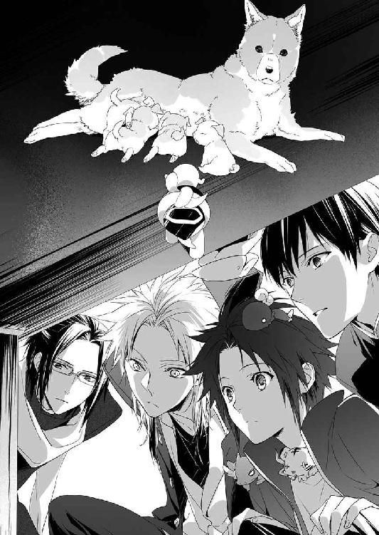
声は何も聞こえなかったが、何か語らっているような間を置いて、チビ玄武は回れ右をした。
蒼司朗のところに、戻る。
「え、っと？」
「「（しゅー）」」
差しだした手の上にチビ玄武が乗ったので、蒼司朗はどうしようか迷ったが、いつものようにポケットに入れた。
「おい！ それだけかよ！」
すかさず篠原勇輝にツッコミを入れられ、蒼司朗は困る。
「いや、だって、言葉わかんないし。篠原だってそうじゃん？」
「それは、そう、だけどもよ......！」
「蒼くん、篠原くん......！」
清志朗に呼ばれ、蒼司朗と篠原勇輝は、慌ててその視線を追う。
ミルクタイムを終わらせた母犬が立ち上がり、蒼司朗たちがいるのとは逆のほうから、書庫の床下を出ていった。子犬たちはよちよちしながら、母犬のあとを追う。
「立ち去ってくれるなら、保健所に連絡する必要はないな」
満足した様子で、蔵田実親は腰を上げた。
７
「あぁ、センパイ、そのファイルの当日の記録のトコなんスけど......」
「うん？」
篠原勇輝に言われて、蔵田実親はさっき受け取ったファイルを開く。
（あ、ボール）
足元にまだ転がったままだったピンクのボールを、蒼司朗は拾い上げた。
（誰かが境内に忘れていったのかな）
子犬がじゃれて遊んでいたようだが、たまたまここにあった、それだけかもしれない。
「────蒼くん、掃き掃除と拭き掃除だよね？」
「うん」
清志朗に頷いて、蒼司朗はボールをポケットに入れる。
「それじゃ、蔵田先輩。神官寮の掃除、終わらせます！」
「あぁ、よろしく頼むよ」
蔵田実親に会釈して、清志朗と神官寮に向かう蒼司朗に、篠原勇輝は言う。
「おい、チビ！ まぁた、ちっけぇモンに引っかかってサボってんじゃねーぞ！ 今夜は......」
「わぁかってるよ！」
あぁもううるさいと、怒鳴るように言い返した蒼司朗は、ふわんと自分のほうに向かって飛んできた、五つのキラキラした小さな光を見る。
「ミギャ」
「キュイ」
「チュピ」
「「（しゅー）」」
キラキラの光は、ひょこっと顔を出したピヨ四神、一匹ずつの口に、ぱっくんされた。
四神の戦士が放つことのできるキラキラ、清浄な気は、奥庭の四神様のいいおやつだ。
神官寮に向かって肩を並べて歩きながら、くすっと清志朗は笑う。
「篠原くんも蔵田先輩も、蒼くんの様子を見に来てくれたんだね」
「えぇ？ そうかなぁ。ファイルの受け渡しの約束してたから、来ただけだろ」
清志朗はそう言うが、約束していた時間だったからだろう。
「あそこから入るほうが、目立たなくていいしね」
篠原勇輝は清志朗とも、たまたま会っただけだ、と蒼司朗は思う。
（気配りは忘れない、いい奴なんだろうけどな）
ピヨ四神へのサービスを欠かさないところは好印象だが、篠原勇輝は口を開くと背の低いことを馬鹿にするので、蒼司朗はいつも腹を立てている。
とりあえず、出会った当初のような、敵意剝き出しの攻撃的な感じはなくなった。面と向かって言われる悪口なんて、可愛いものだ。
「うん、まぁ、それはそうだけど」
偶然が過ぎるのではないかと清志朗は思うが、蒼司朗を刺激して作業が遅れては困るので、それ以上言わないことにする。
蒼司朗がゴミ出しを行った神官寮の中は、それだけでかなり見違えるように小綺麗になっていた。
靴を脱いで上がりながら、清志朗は蒼司朗に提案する。
「じゃあ、蒼くん、階層別れて掃き掃除しようか」
「うん、って、あ！ オレ、廊下の拭き掃除、全部やるから。先に三階から、二人で掃き掃除終わらせちゃおう」
にっと笑った蒼司朗に、清志朗は眉を顰める。
「廊下の拭き掃除、一人でなんて大変だよ？」
横長の建物である神官寮の廊下は長い。
「蒼くん一人になんて......」
「大丈夫大丈夫！ オレ、拭き掃除はかなり自信あるんだ！」
朗らかに笑って、用具室に入った蒼司朗は、箒と塵取りを二組取りだす。
「帝都神社でやってるからさ！」
国内最大級の広さを誇る帝都神社の本殿で、神官修行の一環として、蒼司朗は雑巾がけをやっている。体育館のようなあの場所と比べたら、玄武神社の神官寮の廊下なんて、ずっと狭いし短い。楽勝だ。
「......そう？」
蒼司朗が自信あると言うのなら、確かにそうなのだろうが。
「それに、もともとここの掃除を引き受けたのはオレだから。清ちゃんにキツイ作業はさせられないよ」
「僕も手伝うって言ったよ。二人いるんだから、作業は半分ずつすればいい」
自分が率先して辛いことを引き受けようとするような蒼司朗の口調に、いくらか気分を害した清志朗は、反射的に言い放ってから、依怙地に言い張ったようだと気づく。
（僕は......）
同学年だが、一年近く誕生日が違う蒼司朗を、いつも守る立場でありたかったから、つい。
蒼司朗は確かに学年一小柄で、あまり器用なほうではなく、劣っていると見えるところは色々あるが、清志朗に頼りきっているわけではない。
清志朗が守りたいと思うように、蒼司朗も清志朗のことを守りたいのだ。
一瞬でぐるぐると考えてしまった清志朗だが、蒼司朗はそんなことも知らず、快活に笑う。
「廊下の雑巾がけ、オレ、すっげ上手くなったんだぜ。うちの廊下じゃ短くて、皆に見せられなくて残念だったんだ。今日、清ちゃんにだけは見せられるよ」
楽しいことを一緒にしようと誘いかけるように笑う蒼司朗に、清志朗は肩に入っていた力を抜く。
「わかった。見せてもらうよ」
「見て驚け？」
「うん」
悪戯っ子の顔で笑う蒼司朗につられるように、清志朗も笑った。
作業手順として、まず二人で三階に上がり、廊下の掃き掃除をする。次に箒を雑巾に持ち替えた蒼司朗が廊下を拭き、蒼司朗が三階の廊下の拭き掃除をしている間に、清志朗は二階の掃き掃除をすることになった。
しかし、集めたゴミを塵取りで取った清志朗が、二階に下りる前に。
廊下にかからない階段のところに清志朗を待機させて、雑巾を持った蒼司朗は、廊下の奥へと走る。
「清ちゃん、行くよー！」
「うん！」
手を振る蒼司朗に手を振り返し、階段に立った清志朗は、そこから三階の廊下を覗く。
「じゃ、お前ら、リズム頼むな？」
蒼司朗は綺麗に拭いた窓の桟に、三角巾とマスク装備のピヨ四神を並べた。
「ミギャ」
「キュイ」
「ピ」
「「（しゅー）」」
落ちないように窓の桟に座って、ピヨ四神はスタンバイする。
神官寮は観光客や参詣客の出入りがない閉鎖空間で、蒼司朗と清志朗しかいない。
位置が悪くて残念だが、霊力のない清志朗にも可愛い鳴き声が聞こえ、ピヨ四神の姿が見える状態なのだとわかった。
まず廊下の端を拭いた蒼司朗は、自分の構えるスペースを確保して、雑巾を廊下に置く。
（お庭番、望月蒼司朗、参る！）
「ミギャギャギャギャー！」
「キュイッ！」
「ピッピッ、ピピチュ、ピッピッ、ピピチュ！」
「「（しゅーしゅーしゅー！）」」
ピヨ四神に応援のリズムを刻んでもらって、蒼司朗はクラウチングスタートに似たスタイルから、廊下の拭き掃除をスタートした。
タンタンタンタンタンタンタンタン......！
両手で雑巾を押し、リズミカルな足運びで廊下の雑巾がけをする蒼司朗は、素晴らしい速度で廊下を拭きあげていく。走路が歪むこともなく、廊下が綺麗に拭きあげられているのは、つやりと輝くひと筋の雑巾の拭き跡から明白だ。乗せられた体重でしっかり力が加わって、力強い見事な拭きあげだ。
たかが雑巾がけ。されど雑巾がけ。これはもう、プロと呼べる仕事である。
なるほど、これならば修行の成果として披露したがるわけだと、清志朗は感心する。
清志朗は何でも器用にできるほうだが、蒼司朗が見せたこの雑巾がけは、とてもではないが、すぐには真似できない。
「────すごいよ、蒼くん！ 早いし綺麗だ！」
清志朗に讃辞され、一気に廊下の端まで拭ききった蒼司朗は晴れやかに笑って振り返る。
「だろ？ だから、廊下は二人で拭き掃除するより、オレ一人のほうが絶対早いって！ 廊下だけは、どーんと任せてよ！」
「部屋の中は、一緒に拭き掃除しようね」
「うん！」
畳敷きの部屋の中は、廊下のようにはいかない。
笑いながら頷いて、蒼司朗は雑巾を置いて、復路を拭きあげる。
（僕も負けてられないよ）
清志朗はいそいそと階段を下りて、二階の廊下の掃き掃除をする。急がないと、三階の廊下の拭き掃除を終えて蒼司朗が来てしまう。
（手早く、綺麗に）
蒼司朗の拭き掃除が気持ちよくできるように、清志朗はゴミや塵の取り逃しがないよう、細心の注意を払ってゴミを掃き集める。
清志朗の知らないところで、蒼司朗は確実にスキルアップしている。
（蒼くんはすごくがんばってる）
その努力が公になることがなくても、蒼司朗は手を抜かない。
ゴミ出しは曜日が決まっていてできなくても、出発までに余裕のあった者は、借りていた部屋の掃除を終わらせていた。廊下の面積と比べると、掃除しなければならない部屋の面積はずっと狭かったので、掃き掃除と拭き掃除はそれほど時間をかけることなく終わった。
回収車が来るまでにどうにか間に合ったので、先にゴミ出しをし、掃除道具を綺麗にして片づけて、掃除は終了だ。
「ミギュギュギュ」
「キュイキュオ」
「ピピ」
「「（しゅー）」」
「うん、ありがとうな」
手を洗った蒼司朗は、掛け声で応援してくれたピヨ四神を撫でて可愛がり、定位置に戻す。
「やっぱり清ちゃんがいると、何でもすごく早く終わるなぁ」
「蒼くんの手際がいいからだよ」
さっぱり綺麗になった神官寮を出た蒼司朗と清志朗は、社務所に向かう。
「すみませーん、望月蒼司朗です。神官寮の掃除、終わりましたー！」
「ミギャギャ」
「キュイキュイ」
「チュッピピピ」
「「（しゅー）」」
大きな声で言った蒼司朗と同じように、ピヨ四神も来訪を知らせる。
奥から出てきた玄武神社の神官は、奥庭の四神様を連れた蒼司朗と清志朗を、笑顔で迎えた。
「ありがとうございました。どうぞ、こちらにおかけになってひと息入れてください」
話は蔵田実親からきちんと通っていて、ピヨ四神用に、お供えのお菓子と玄武神社の清水を用意する手筈になっていた。
ピヨ四神のお菓子はお持ち帰りでもよかったのだが、蒼司朗と清志朗にもお茶とお菓子を支度してくれていたので、ありがたくご馳走になることにする。
奥の座敷は、社務所の来客には見えない場所で、結界領域になっていたので、清志朗にも蒼司朗にくっついているピヨ四神が見えた。
玄武神社の神官は、とてもにこやかに迎え入れてくれたのだが......。
「────ミギャン......」
「キュ」
「チュン」
「「（......）」」
ピヨ四神は、そーっと頭を引っこめて隠れた。
「し、四神様!?」
何ごとか粗相でもあったのかとうろたえる神官に、清志朗と一緒に座敷に上がった蒼司朗は苦笑する。
「すみません、人見知りなんです」
「────玄武様まで......！」
御前試合のときに同じ組で戦ったはずなのにと、ガタイのいい神官は、くうっと情けない顔になったが、ピヨ四神は大きな男の人に怯えてしまうのだ。
「小さい子供は、ちょっと会わないと忘れてしまいますよね」
清志朗のフォローに、なるほどそういうこともあるのだろうと、神官は切ない様子で、お菓子を並べ、清水とお茶を給仕する。
「では、どうぞごゆっくり」
神官が座敷を下りて、会釈して立ち去って、ようやくピヨ四神は隠れるのをやめた。
「ミギャギャー」
「キュイキュオキュオ」
「ピピチュ、チュピピ」
「「（しゅーしゅーしゅー）」」
畳に飛び下りて、おやつの時間だーとばかりにはしゃいで、座敷を駆け回るピヨ四神に、清志朗は苦笑し、蒼司朗は呆れる。
「内弁慶なんだから、もう！」
ピヨ四神が食べやすいよう、上生菓子を小さく取り分ける蒼司朗の膝の周りに、ピヨ四神は目を輝かせながら集まる。
「ミギャギャ」
「キュイキュイ」
「チュピチュピチュピ」
「「（しゅーしゅー）」」
「はい、お水飲んでからね」
お菓子を喉に詰めないように、まずはしっかり喉を潤してからと、蒼司朗は清水の注がれた小さな皿を畳の上に置き、ピヨ四神に差しだす。
ピヨ四神は、わっと清水に群がって美味しく喉を潤した。
大喜びするピヨ四神と、ほのぼのお茶の時間をして、清志朗はお菓子の真っ白な懐紙に隠れるように置かれていた、二通の白い封筒に気づく。ピヨ四神にお菓子を取り分けなくてはと、蒼司朗が卓の上のものを動かしたときに重ねてしまったようだ。
「蒼くん、これ。アルバイト料じゃないかな？」
「え？ あ、ホントだ。────わ、けっこう入ってる！」
「そうなの？」
見て見てと蒼司朗に封筒を広げられ、自分の名前の書かれていた封筒を覗いて清志朗も驚く。
「清ちゃん、オレこんなにもらっていいのかな......」
困っているところを手伝って助けたといっても、たかが掃除だ。
蒼司朗が困惑するのももっともだが。
清志朗は溜め息を吐く。
（蔵田先輩......）
ちゃっかりしている蔵田実親は、自分が損になるようなことはしない。
「......いいと思うよ。蔵田先輩が決めたんだから」
「そう、かなぁ......。先に集めていたとは聞いてたけど」
一般的に、短時間のアルバイトで子供がもらうような金額ではない。
こんな金額になっていたとは思っていなかった蒼司朗は、予想以上の大金を前に腰が引けてしまう。
「蒼くん、ありがたくいただいておいて、機会があったら、先輩に飲みものをご馳走するとか。そういうときに使えばいいと思うよ」
清志朗の言葉に、蒼司朗はほっと表情を寛げる。
「うん、そうする！ 清ちゃん、ありがとう」
蒼司朗はポケットに大切に封筒をしまった。
お菓子を食べ終えたピヨ四神が、うとうとして蒼司朗の膝の上でお昼寝しかけた頃、蔵田実親が社務所に来た。
「やぁ、よかった。まだいてくれたね。神官寮の掃除、助かったよ。ありがとう」
「いえ、オレのほうこそ、お役に立ててよかったです」
「アルバイト料、たくさん、すみません」
蒼司朗と清志朗は蔵田実親に頭を下げる。
蔵田実親は、にこっと微笑む。
「あとね、蒼司朗クン、キミもうすぐ誕生日だよね。僕からひとつ、お祝いがあるんだ」
「オレに、お祝い、ですか？」
蒼司朗はきょとんと目を瞬く。
微笑んで頷いて、蔵田実親は言った。
「明日の『更衣の祓い』に出してあげるよ。御前試合では勇輝クンの白虎神社、追儺の儀式では奏クンと、それから桃花祭では薫子クンの付き人をして、お内裏様みたいな衣装を着たよね。僕の玄武神社の受け持つ儀式にも、もちろん参加してくれるだろう？」
「え、と、ありがとうございます」
清志朗も頷いてくれたので、はにかんで笑って、蒼司朗は快諾する。
「参加させていただきます」
サプライズで誘いかけるようなことなのだから、儀式に参加するといっても、そんなに難しいことではないはずだ。
「そう。よかった」
にこっと蔵田実親が微笑む。
道路を近づいてきた救急車が、サイレンを鳴らしながらすぐ近くで停まった。
「────こちらです！」
「おい、救急車が来たぞ！」
社務所の外を、ばたばたと人が移動する足音がする。
ついさっき、玄武神社で急病人が出たようだ。
「岩崎神官、しっかり！」
担架で運ばれて行ったのは、参詣客ではなく、玄武神社の神官らしい。
蔵田実親の目が挙動不審に泳いだ瞬間を、蒼司朗と清志朗は見逃さなかった。
「......蔵田先輩」
思わず低い声を出してしまった蒼司朗に、蔵田実親は笑う。
「うん、大丈夫！ 心配いらないよ。蒼司朗クンなら、ちょっとお稽古すれば何とかなるはずさ。何とかならなくても、気にしなくていいよ。蒼司朗クンなら、間違えたって失敗したって、誰も何も思わないからね？」
８
『更衣の祓い』は、帝のお召し物を冬物から春物へと交換する儀式だ。
冬物のお召し物をすべて春物へと交換し、冬物はお焚き上げして清める。象徴的な儀式として、衣装盆に載せてお召し物を運んで入れ換え、穢れを祓う武闘の舞を披露する。
「ひょっとして、怪我なさった岩崎神官は────」
ぐっと拳を握りながら訊ねた蒼司朗に、蔵田実親は笑う。
「うん、武闘の舞の舞手だったんだ。蒼司朗クンには、ぜひ、彼の抜けた穴を埋めてもらおうと思って」
「思わないでください！」
「さっき武闘の舞の予行練習をしていたときに、練習用の舞台が崩れちゃったんだよ。僕と他の四人は大丈夫だったんだけど、岩崎神官は一人だけ、落ち方が悪かったんだね。顔ぶつけちゃって鼻血がぶはーっと出て、右足が、こう、膝から下のところかな、ありえない方向に曲がっちゃっててね。びっくりしたなぁ」
「びっくりしてるのは、オレです......！」
「岩崎神官が着ていた衣装は鼻血でダメになってしまったけど、蒼司朗クン用の衣装は、前の『更衣の祓い』で僕が着たものがあるから、心配いらないからね」
まったく聞く耳のない様子で、蔵田実親は蒼司朗に微笑む。
（蔵田先輩......）
清志朗は聞きながら、軽い頭痛を覚える。
血液の染みは落ちにくい。ましてや、神聖な儀式に使う衣装だ。一度血に染まったものを使うことはできないだろう。
にこにこと蔵田実親が言う『前』は四年前で、中学生の頃の話だ。
小柄な蒼司朗ならば、四年前に蔵田実親が着た衣装でも、十分に着られるだろう。
「衣装があるからいいってものじゃないですよ！」
サイズの件はスルーして、蒼司朗は蔵田実親に訴える。
清志朗は知らないが、御前試合のときに白虎神社組の蒼司朗が着た衣装は、篠原勇輝が小学校六年生のときに誂えたものだ。中学生のときに蔵田実親が着たものなら、小学校六年生のときのものよりは、いくらかましだ。
安藤奏と共演した追儺の儀式の演舞は、蒼司朗が小柄で、仕立て直す衣装の生地が、蒼司朗のサイズならば間に合いそうだという、やむにやまれぬ事情が選出の理由だった。
今回もそういうことかと、蒼司朗は慣れっこになっている。
「えー？ 衣装がないと、困るよ？ 『更衣の祓い』に参加する神官の数は、昔から決まっているんだから」
「神官候補生のオレなんかが『更衣の祓い』に参加させてもらえるのは、身に余る光栄です。でも、衣装があるからって、どうして武闘の舞に出ることになるんですか!? 儀式は明日ですよ!? 練習する時間ないじゃないですか！ 出たことある人で、何とかしてください！」
末席で人数合わせならまだしも、武闘の舞はあまりに荷が重い。
「皆、嫌だって言うから。じゃあ、蒼司朗クンにって」
「その展開、絶対おかしいです！」
蒼司朗が主張することは正しいのだが、誰も岩崎神官の代役をやりたがらなかったというのも、紛れもない事実だ。
うーんと腕組みして考えて、蔵田実親は上目遣いに天井を見る。
「貧乏籤？」
「それって、誕生日のお祝いにはありえません......！」
口論する気力も萎えて、蒼司朗はぐったりと脱力した。
帝の御前で、帝都の行事のひとつとして行われる『更衣の祓い』の晴れ舞台。
怪我人が出て欠員を急遽埋めたために、稽古不足なのはどうにもならない。衆人に注目される武闘の舞で、失敗して恥をかきたくないのは、誰でも同じだ。
「蒼司朗クンなら、できるよ。ほら、奏クンと共演してるし。演舞の舞台経験あるから」
気楽に言う蔵田実親に、蒼司朗は口を尖らせる。
「あれは事前に死ぬほど稽古したから、何とかなっただけですよ。確かに、オレならどんな失敗しても、そういうものかで終わっちゃいそうですけど......」
上手くできて、奇跡。失敗しても、まぁ、そうだろうなと、生温かく見守ってもらえて終わりだ。
大人は恥をかくと、被害妄想も無駄に膨らんで、なかなか立ち直れない。
心身ともに成長過程の蒼司朗なら、多少の恥は珍しくない。無駄に傷つくこともない。
蒼司朗が頑として突っぱねることは不可能ではないのだろうが────。
（蒼くんが引き受けずに、もしも武闘の舞が中止になったら、絶対に蔵田先輩は蒼くんのせいにするよね......）
自分が無茶ぶりをしたことを棚に上げて、何かあるたびにちくちくと、笑顔で嫌味を言う姿が清志朗の目に浮かぶ。
社務所に急ぎ足で、神官が三人入ってきた。
「実親様、舞台の用意ができました......！」
「はい。────じゃ、行こうか、蒼司朗クン」
にこっと蔵田実親に微笑みかけられたが、蒼司朗はまだ武闘の舞の舞手となることを引き受けたわけではない。
「でも、オレは......」
「蒼司朗様、時間がありません」
「どうぞお早く」
笑顔で座敷に上がった神官が、蒼司朗に近づく。
「ミギュ......」
「キュウ」
「ピ」
「「（しゅー......）」」
何だか妙なことになってきたみたいだと、気持ちよくお昼寝できずに蒼司朗の膝の上でゴロゴロしていたピヨ四神は、ガタイのいい神官たちに寄ってこられ、怯えて慌てて蒼司朗にくっついて隠れる。
「いや、あの、オレ......！」
にこやかな神官たちは、問答無用で蒼司朗を担ぎ上げた。小さくて軽いから、多少抵抗しようとも、軽々楽々だ。
「ちょっ！ 先輩っ！ オレ、引き受けるなんて！」
「清志朗クン、また夜にね。今日はどうもありがとう」
「......はい、お邪魔しました」
にこやかに蔵田実親に追い出しをかけられて、清志朗は拉致されていく蒼司朗を、為す術もなく見送る羽目になった。
『更衣の祓い』の武闘の舞は、帝に近づこうとする災厄や病魔を追い払う、という展開になっている『成敗もの』の演舞だ。
演者は災厄や病魔役と、それを退治する役とに分かれる。
荷物のように運ばれた蒼司朗は、武闘の舞の練習用舞台に連れてこられた。ピヨ四神用の小祠と座布団まで支度されているところを見ると、とても計画的だったらしいとわかる。
（大役は正直、勘弁してほしいけど）
ここまで来てしまっては、嫌だとごねても往生際が悪くて見苦しいだけだ。
蒼司朗は腹を括って、よしよししながらピヨ四神を座布団の上に座らせる。
周りにいるガタイのいい玄武神社の神官たちに怯えて、きゅっとピヨ四神は寄り添う。
（知ってる人ばっかりなのになぁ）
蒼司朗は内緒話するように、ちょっと身を屈めてピヨ四神に顔を近づけて言う。
「ここでオレを見守っててくれな？」
「ミギャ」
「キュイ」
「チュピ」
「「（しゅー）」」
蒼司朗に頼られて、任せておけとばかりに、ピヨ四神はいい顔になった。
役目があって、がんばらなくてはとそちらに集中すると、周りのことは気にならなくなるものだ。
「え、と、じゃあオレは、退治される病魔の役で......」
「何を言ってるんだい？ 蒼司朗クンは、病魔を退治するほうに決まっているさ。ちっちゃい病魔じゃ迫力出ないよ」
蔵田実親の言葉に賛同するように、練習用舞台に集まっていた玄武神社の神官たちは、わははと声を出して笑った。
蒼司朗は、ひくっと顔を引きつらせる。
「......ソウデスネ」
（我慢！）
「ミギャギャギャギャ！」
「キュオキュオ！」
「チュンチュン！」
「「（しゃーしゃー！）」」
ぐっと拳を握った蒼司朗に、ピヨ四神はがんばれ負けるなと声援を送る。
エキサイトするピヨ四神に、にこっと蔵田実親は微笑みかける。
「正義の味方の蒼司朗クンは、きっととっても格好いいですよ？」
「ミギュ？」
ピヨ四神がくりっと首を傾げ、その愛らしさに何人もの神官が、ひっそりと悶絶する。
「奥庭の四神様、ほら、このように」
蒼司朗の身につける衣装を運んだ神官が、着るとこんな感じだと、蒼司朗に簡単に被せて見せる。
蔵田実親用に誂えられた衣装は、生地は極上であり、刺繡も見事だ。似て見えても、他の神官の衣装とは明らかに質が違う。
そして誂えたように、サイズもよし！
「ミギャギャ！」
「キュイキュイ！」
「ピルルルルル！」
「「（しゅーしゅーしゅー！）」」
ステキステキとはしゃいだピヨ四神に、神官たちは満足そうに頷きあった。
にこやかに蔵田実親は言う。
「馬子にも衣装だよねぇ」
「センパイ、それ褒め言葉じゃありませんから......！」
腹を立てても仕方ないと蒼司朗はわかっているのだが、カチンとくるものはしょうがない。
奥庭の四神様にご満足いただいて、神官は衣装を丁重に片づけ、蔵田実親は蒼司朗を舞台の中央に誘う。
「まずひと通りの動きを打ち合わせして、それから練習用の衣装をつけて通し稽古をするよ。演舞の基本は、二月に追儺の儀式で奏クンと舞った舞と同じ。だけど今回の演舞は、『武闘の舞』と呼ばれる、殺陣が中心となるものなんだ。楽や謡に合わせるけれど、手や足の所作は一般的な舞踊みたいに厳格でなくていい。帝の衣替えで、これからお召しになるものに災厄や病魔が近づかないよう、武闘の舞で象徴的に退ける」
演舞には進行を示す物語がある。
今回の演舞の話は難しいものではない。
（バイキン退治みたいなものだよな）
「演舞が始まると、演技指導とかはまったくできなくなるけれど、うちの神官が被ると、蒼司朗クンは見えなくなっちゃうから、帝と観客によく見えるところを常に立ち位置にするよう、注意してくれたまえ」
「わかりました」
どうせ舞台に上がるのならば、見てもらえなければ意味がない。
「どんな失敗をしても、気にしないようにね。他のみんなも、蒼司朗クンが失敗したって誰も気にしないから、全然恥ずかしくないんだよ？」
「ソウデスネ」
怪我をした神官の欠員補充として、衣装の件も含めて、舞台に上がれるのは一人しかいないと、急遽抜擢された蒼司朗は、本当に人数合わせの存在だ。
失敗しても、むしろ当然である。
（だったら、堂々とするだけだ）
なるようにしかならないと蒼司朗は思う。
「蒼司朗様、練習にはこちらを、本番にはこちらをお使いください」
神官が蒼司朗に棍を渡し、儀式の際に使用する薙刀を見せた。
「ありがとうございます」
いつも愛用の枝打ち斧を武器代わりに使っている蒼司朗は、同じように柄の長いものを支度されて、これならいくらか使い勝手がいいと安堵する。
蒼司朗は中学時代に『巌手のブルー・ムーン』と呼ばれた少年剣士で、剣道の心得はあるが、弓矢や取っ組み合い系の武術は、体育の時間にやった程度で、ほぼ使えない。棒術は神官修行で習っているので、いくらかリーチの長いものならば、振り回すのは得意だ。
「さぁ、練習できる時間は僅かだ！ 始めよう！」
パン！ と蔵田実親が手を叩き、神官たちは舞台を下りたので、蒼司朗も同じように舞台を下りる。
蒼司朗に武闘の舞の段取りを教えるための練習の時間は、瞬く間に過ぎた。
練習用の衣装を身につけて、ひと通り通し稽古をするだけで、タイムアップだ。
（覚え、きれなかったかも......）
蒼司朗は他の神官と同じように、ついて動くだけで精一杯だった。
周りのフォローに頼るしかない。
「望月蒼司朗様は、さすが、香月宣之助太夫のお弟子さんですね。基礎がどれもしっかりしておられる......！」
「ありがとうございます」
演舞の指導を行っていた舞踊家に誉められて、蒼司朗は頭を下げる。
「これならきっと、何とかなるでしょう。明日が楽しみですね」
（明日で終わりだから！）
とんでもないことを引き受けさせられたが、稽古に時間を割かれることがないのは、正直助かる。
日が暮れる前に解散となって、愛用の小型ショベルカーで玄武神社を出た蒼司朗は、途中で帝都城公園に入り、ほんの少しだけ奥庭の作業をしてから、帝都神社の社務所で仮眠を取る。
今夜は『蟲呼びの夜』だ。
『更衣の祓い』の前に、帝都に巣くった蟲を一掃する。
社務所に与えてもらっている部屋に入り、ピヨ四神と一緒に軽く汗を流した蒼司朗は、布団に入った。
綺麗に身体を洗って、全身ふかふかのつやつやになったピヨ四神は、蒼司朗に自分の身体のどこかを触れさせて、機嫌よく目を閉じる。
眠気のきた子供が、ほかほかと温かくなるように、ピヨ四神もほかほかしてきて、蒼司朗は優しい睡魔に誘われる。
眠りに落ちる前に、蒼司朗はふと、今日玄武神社で見かけた犬の母子を思い出す。
（本当に大丈夫だったのかな。行くところ、あったのかな......）
チビ玄武が事情を伝えに行ったので、保健所の職員を呼んで捕獲されるより先に、玄武神社を立ち去ったようにも見えた。
人間の手間を減らすように────。
キャン
クーンクーン
キャンキャン
蒼司朗の耳に、ころころとじゃれて遊ぶ子犬の鳴き声の幻聴が聞こえる。
（あぁ、夢だ）
意識を眠りの縁に沈めていきながら、蒼司朗は思う。
蒼司朗の脳裏に浮かんだ犬の母子は、住宅街にある一軒家の庭に入りこんでいた。
（その家、引っ越しちゃったんじゃないのかな......）
まだ昼間なのに、雨戸がすべて閉まっていて、誰もいる様子がない。
母犬に餌をくれる人はいないのに、何も知らない子犬は、無邪気に遊び、眠っている。
通りの向こうにある粗大ゴミ置き場の陰で、ざわりと何かが蠢いた。
（蟲......？）
蒼司朗の意識は、物陰を移動する、蟲らしきものを追いかける。
物陰を移動しながら、蟲はだんだんと数を増やす。大きな蟲が小さな蟲を喰らって、さらに大きな蟲になり────。
「......ウー！」
暗がりから、音もなく迫りくる蟲に、母犬が警戒する。
風に流された雲が、太陽の光を遮り、影を落とす。
範囲を広げた影の中。
「キャン！」
ぞわりと迫りきた蟲に、子犬が吞まれた。
子犬を助けるために、母犬が蟲に飛びかかる。
（ダメだ、戦っちゃ......！）
傍観することしかできない蒼司朗は、何もできないことに焦れる。
（逃げて！）
────ジリリリリリリリ......！
「っ！」
蒼司朗は、かっと目を開ける。
（夢......？）
ここは社務所だ。蒼司朗は『蟲呼びの夜』に備えて、仮眠を取っていた────。
蒼司朗の近くでは、のびのびした姿でピヨ四神が気持ちよさそうに眠っている。
どきどきする胸を押さえながら、蒼司朗は身を捻って手を伸ばし、鳴り続けている目覚まし時計のベルを止めた。
９
神官装束に着替えた蒼司朗は、愛用の枝打ち斧を持ち、ピヨ四神を連れて部屋を出た。
蒼司朗に甘えて寛ぎまくっているピヨ四神は、着替えた蒼司朗によれよれとくっついたものの、いつもの居心地いい場所に入りこんで、ぬくぬくと安眠を続けている。
奥庭の四神様は『蟲呼びの夜』に、神官候補生の蒼司朗と一緒に参加するものの、活動する頭数には入っていない。居合わせた奥庭の四神様が、すやすやと眠っていられるような状況であることが、『蟲呼びの夜』としては理想的だ。起こす必要はない。
（持ってきちゃった......）
廊下を歩きながら、蒼司朗は玄武神社の境内で拾ったピンクのボールを見つめる。
（あのあとばたばたして、玄武神社の社務所に寄れなかった）
落としものとして届けて、見覚えがないか玄武神社の社務所の神官に訊ねようと思っていたのに、持ったまま移動してしまった。
そして、あんな夢を見たので、何となく手に取って、部屋から持ちだしてしまった。
（ただの夢、だよな......）
行く場所があるらしいと見送ったものの、蒼司朗は犬の母子のことが何となく心配だった。明日の『更衣の祓い』の武闘の舞に対する不安もある。
もやもやして、すっきり仮眠を取るという心境ではなかったのは確かだ。
「しっかりお休みになられましたか？ 蒼司朗様」
鈴宮神官に声をかけられ、俯いていた顔を上げた蒼司朗は、隠すように神官装束の懐にピンクのボールをしまった。
「こんばんは、鈴宮神官」
鈴宮神官は蒼司朗に微笑みかける。
「更衣の祓いの武闘の舞に出られるそうですね。蒼司朗様なら、きっとうまくできますよ」
「ありがとうございます。がんばります」
応援されて、蒼司朗は笑顔で応えたつもりだったのだが、じっと蒼司朗を見つめた鈴宮神官は、眉を顰めた。
「────何かありましたか？ 蒼司朗様。玄武神社の方に言えないことですか？」
玄武神社の神官は、皆、体格が立派でいかついガテン系だ。
話のわからない神官たちではないし、乱暴に脅しつけられることはないが、集合という形で取り囲まれれば、存在だけで威圧されて、とてもではないが意見なんてできない。
年齢よりも小柄で、しかも今回、半ば強制的に参加させられる蒼司朗ならば、ぐっと堪えて吞みこんだ思いがあっただろうと推測できる。
「私のほうから小此木神官長にお伝えして、便宜を図っていただきます」
相談ではなく、鈴宮神官は断言した。
（私が蒼司朗様を守ってさしあげなくては......！）
帝都神社は帝都の四神神社より、格が上だ。帝都の神官の最上位である小此木神官長ならば、玄武神社の神官の誰にでも、忌憚なく意見することができる。どの神官も、小此木神官長の意見を聞き入れないわけにはいかない。
自分が仲介して蒼司朗を守らなければと、気遣う鈴宮神官に、蒼司朗は慌てる。
「あ、いえ！ とんでもない！ 玄武神社では、とてもよくしてもらいました！ 明日の舞台でも、全面的に助けてもらうことになってます。一緒の舞台に上げてもらうだけでも、身に余る光栄です！」
「確かに、滅多にできない経験ですね」
玄武神社の神官は何も悪くないのだと、懸命に説明する蒼司朗に、鈴宮神官は苦笑する。
「不安なことも多々あると思いますが、蒼司朗様は精一杯のことをなさればよろしいです。いつもの元気な姿を見せていただければ、それだけでいいのですよ」
正直なところ、着られる衣装があったとしても、誰もやりたくなかった緊急事態だ。
大抜擢された蒼司朗は、まさしく貧乏籤を引かされたわけだが、大人の神官の中で果敢に活躍する、明らかに子供の体格の神官候補生には、観客の目も甘くなる。たとえ上手くなく、失敗しても、微笑ましいと思われるだろう。
鈴宮神官の言葉から、蒼司朗は自分が元気なく見えたのだと察する。
「心配かけてすみません。ちょっと、さっきの仮眠の夢見が悪かっただけなんです」
「夢見、ですか？」
鈴宮神官は目を瞬き、そして声を潜める。
「......何か不吉な予知夢をご覧になったのですか？」
奥庭の四神にお庭番として選出されるような少年だ。何かしら、不思議な能力を持っていてもおかしくはない。
たかが夢と、笑い飛ばされるだろうと思っていた蒼司朗は、真剣な表情の鈴宮神官に驚く。
「いえ！ そんな、予知夢なんて見たことないです！ ちょっと不安だったり色々あったからだと思います。『蟲呼びの夜』とか、『更衣の祓い』とかには、関係ない夢でしたから！」
「そう、ですか？ 神経が休まらない状況で、緊張が続いているからかもしれませんね。今夜の『蟲呼びの夜』は、速やかに終わるといいですね」
「そうですね」
気を配ってくれる鈴宮神官に感謝しながら、蒼司朗は一緒に社務所を出た。
帝都神社の神官たちと同じように時間厳守で集合しても、神官候補生であり、まだ正式な神官ではない蒼司朗は、『蟲呼びの夜』に参加するものの、戦力としては数えられていない。
役割に分かれて出発し、任につく精鋭たる神官たちと別れ、蒼司朗は数名の神官と帝都城に向かう。
牛車に乗って『蟲呼びの夜』に協力してくれる若様について、形ばかりの護衛をしながら、蒼司朗は安全な場所で見学だ。
「水分補給はしっかりね」
声と同時に、にゅっと横から竹筒水筒を差しだされ、帝都大通りの所定の位置に向かう牛車の牛の横を歩いていた蒼司朗は驚く。
「小此木神官長......！」
多忙であちこちに呼ばれていたらしく、蒼司朗は今日、朝からまったく小此木神官長の姿を見かけなかった。
「はい、蒼司朗くん、ぐぐっと飲んで飲んで」
小此木神官長は笑顔だが、目の奥は笑っていない。
「歩きながらですか？ お行儀悪いですね」
『蟲呼びの夜』は、帝都神社に集合したときからすでに始まっている。任務につきながら、水を飲んでいる神官はいない。
「行き着いちゃったら、余計に余裕なくなっちゃいますよ？ 蒼司朗くん。十秒チャージは歩きながらでもＯＫですからね」
とてもばつが悪いが、あとでいただきますと遠慮できないようだと観念して、蒼司朗は小此木神官長の差しだす竹筒水筒を受け取る。
「トイレに行きたくならないように、祈っててください」
蒼司朗は竹筒水筒の栓を取って、水を口に含んだ。気楽に場を抜けてトイレに行けないため、水分の摂取を控えていたので、ひんやりした水はとても気持ちよく蒼司朗の喉を潤した。
小此木神官長が蒼司朗に勧める水は、帝都のよく効く薬を溶かした、蒼司朗用の特別な清水だ。
（美味しい......）
胸の奥につかえていた嫌なものを、清涼な水が、すうっと溶かしていった、そんな感じだ。
「────ありがとうございます。とても美味しかったです」
「それはよかった。ではこちらは、奥庭の四神様のおめざに持っていてください」
にっこり微笑んで、小此木神官長は中身のたっぷり入った竹筒水筒と、空になったものを交換した。
「すみません、ありがとうございます」
本来は立派な神様だから、どうにかなってしまうわけではないため忘れがちだが、ピヨ四神は赤ん坊なので水分補給は欠かせない。
蒼司朗は大事に受け取って、腰帯の間に竹筒水筒を挟んでおく。
『蟲呼びの夜』はいつもと同じように、特に大きなトラブルや突発的事件もなく進んだ。
帝都の一番外周から、結界を狭めて蟲を追いたて、小さな蟲を大きな蟲に統合するようにして、帝都大通りまで誘導してくる手筈は、まったくいつもどおりだ。
ただ────。
「────帝都北地区の蟲、巨大化し、かなり強暴なようです......！」
連絡を受けた神官の報告に、玉串を振って小此木神官長は命じる。
「若様の結界の強化を！」
涼やかな声を聞き、打ち合わせて命じられていた神官が三名、警護に加わる。
（オレも戦わなくちゃ......！）
蒼司朗は枝打ち斧の刃に被せていた袋を外す。
四神変化して帝都大通りにスタンバイし、大型の蟲の襲来を待ち侘びていた四神の戦士が、果敢に戦い、蟲を駆除する。
「玄武凄流、酷屍霧葬！」
玄武の戦士の放つ渦巻く霧が蟲に襲いかかり、呼吸器官に侵入して窒息させ、あらゆる隙間に入りこんだ水が瞬時に凍りついて体積を増し、内側から蟲を破裂させる。
「朱雀炎舞、劫火招来！」
朱雀の戦士が優雅に振り動かした羽根扇から、紅蓮の炎が奔り、一撃で蟲を焼き尽くす。
「青龍斬撃、剣乱破砕！」
青龍の戦士の青龍刀は、ひと振りで何百もの白刃を放ち、蟲を微塵に切り刻む。
「白虎刻抉、毒禍爪爛！」
白虎の戦士の鋭く大きな鍵爪は、斬りつけた蟲の身体を一瞬にして猛毒で蝕み、膿み腐らせる。
四神の戦士ほど目覚ましい活躍はできなくても、帝都を守る逞しい格闘系神官は、得物を鮮やかに使って、蟲を次々に退治していく。支援に当たっている神官は、祝詞をあげ鈴を振り鳴らし、戦う神官を加護の力で守る。
「ギュイイイィィィッ！」
ひと際大きな鳴き声に振り向いた小此木神官長は、北から迫りくる蟲の姿を睨む。
寄り集まり、喰らいあいながら醜悪に変貌したその蟲は、怪異話に出てくる土蜘蛛か何かに似ているように思えた。
赤く光る目が、大小十以上あり、足とも触手ともつかないものが、無数に蠢いている。
（これは......！）
ひさびさの大物到来だ。もう二、三跳び進まれると、若様の間近に迫ってしまう。
牛車を囲む結界の維持のためにも、これ以上、若様に近づけないほうがよいと判断し、小此木神官長は声をあげる。
「四神究極奥義、解禁！」
小此木神官長の声に、神官たちの間にびりびりとした緊張が走る。
四神究極奥義の解禁命令は、神官たちにとっては緊急退避の命令だ。若様の乗る牛車を中心として形成する、絶対安全領域に退避し、結界を強化して、四神の戦士の活動の妨げにならないよう、身構えなければならない。
四神究極奥義の発動に巻きこまれたなら、攻撃範囲の結界内にいた、あらゆる大きさの蟲だけでなく、体格のいい大人の男性の身体さえも、塵と化して消滅する。
四神の戦士が、それぞれの方角に分かれてスタンバイを始める、緊迫した状況に、蒼司朗は懸命に祝詞をあげながら自分の立ち位置を探る。
（邪魔をしないように、できるだけ牛車の近くに────）
下がろうとした蒼司朗は、小さな蟲を退治しながら後退してくる神官がすぐ近くで引いた薙刀に、ぶつからないよう慌てて横に退く。
動いた拍子に手がぶつかって、蒼司朗の懐から、ぽーんとピンクのボールが転がりでた。
「わ！」
『蟲呼びの夜』の現場に、あんなものを持ちこんでしまった蒼司朗は、勢いをつけてどんどん転がっていくピンクのボールに慌てる。しかし、拾いに行くことなどできない状況だ。
短く声をあげ、一気に心拍数が上がって嫌な汗をかいた蒼司朗に、何があったのだろうと、ひょこっとピヨ四神は顔を出す。
「「（しゃー！）」」
いつもなら行動も反応もおっとりしているチビ玄武が真っ先に反応し、驚いた蒼司朗は。
転がっていくピンクのボールに、何本かの触手や足が明らかに反応した蟲を、確かに目撃した。
「......え？」
どきんとした蒼司朗に、懐から顔を出したチビ玄武が、もごもご動く。
「「（しゃーしゃーしゃー！）」」
「ミギャッ！ ギュココココココ！」
「キュウイィィ！」
「ピピピピチュピチュ！」
一大事だと知らせるピヨ四神に、言葉はまったく通じないが、蒼司朗は言いたいことを理解する。
（あの犬の母子が、蟲に取りこまれてる......！）
いくらか埃の溜まった暗がりに潜んでいる蟲は、小さいモノでも血を吸ったり、肉を齧ろうと喰いついてきたりする。
帝都で飼われているペットは、蟲が寄りつかないように、清めの成分を含む水を与えられ、帝都で配布されている石鹼で定期的に洗うよう指導され、確認を受けている。
ペットの届け出を絶対としているのは、ペットを蟲に取りこまれないようにするためだ。
動物が取りこまれた蟲は、通常のそれよりも醜悪さや強暴さを増して、厄介な存在になる。
帝都の事情や、蟲の性質の細かいところまで、蒼司朗は知らないが。
（大変だ......！）
仮眠のときに見た夢は、不安が生みだした幻ではない。四神の戦士が守護している帝都で起こっていた事件だったのだと確信した蒼司朗は、牛車の警護から離れ、絶対安全領域を飛びだす。
チビ玄武が事情を伝え、犬の母親は子犬を連れて速やかに玄武神社を立ち去った。
とても聞き分けがよく、お行儀のいい賢い犬だ。母犬を慕って一生懸命ついていった子犬たちも、とても可愛かった。
「蒼司朗様!?」
突然、脱兎のごとく駆けだした蒼司朗に、近くにいた鈴宮神官は驚く。
「戻ってください！ 蒼司朗様！」
誰よりも小柄だが、瞬発力だけなら、蒼司朗に敵う者は、神官の中におそらく誰もいない。蒼司朗は足も速く、あの勢いでは止めようにも止められない。
小型の蟲を退治しながら絶対安全領域に速やかに退避しようとする神官たちの間を縫い、逆行して駆けながら、蒼司朗は必死で訴える。
「待ってください！ あの蟲を滅さないで！ あの蟲には、玄武神社にいた犬の母子が取りこまれてるんです！」
叫んだ蒼司朗の声に、小此木神官長が振り返る。
「玄武神社の犬の母子って、蒼司朗くんのお尻に子犬が一匹食いついてぶら下がった、あれですか!?」
そんなこと誰から聞いたのか、気になるが蒼司朗はスルーする。
「そうです！ あの犬の母子です！ 母犬と子犬四匹！ 助けてください！」
あの犬の母子は、何も悪いことをしていない。蟲の犠牲になった、可哀想な犬たちだ。
受け持ちの場所に立ち、身構えようとしていた白虎の戦士・篠原勇輝は、叫ぶ蒼司朗の声を聞きつけ、ぐっと拳を握る。
「勝手なこと言ってんじゃねぇ！ さっさと引っこめ！ 馬鹿チビ！」
「勝手なことじゃない！」
怒鳴られた蒼司朗は、篠原勇輝に向かって怒鳴り返す。
「保健所で保護してもらうんだろ!? 飼い主探して連絡取るんじゃなかったのかよ!?」
人間に従順で、よきパートナーである犬。よちよち歩きの子犬は、一生懸命お乳を飲んで、大きくなろうとしている。穢れを知らない、この世に誕生したばかりの無垢な新しい命と、それを温かく慈しみ、守ろうと懸命な親。
犬の母子が蟲に襲われ、取りこまれてしまったのは、何か悪いことをしたからではない。玄武神社の者に手間をかけさせまいと、あの場所から立ち去ったからだ。
犬の母子には、何の罪もない。
たとえあの犬の母子が野良犬だったとしても、それは人間が捨てたから。
人間が飼わなければ、野良犬なんていない。
蟲を中心に展開し、かなりの距離はあったが、帝都大通りという見通しがよく広い場所の深夜である。怒鳴りあう声は、嫌なくらいよく通った。
朱雀の戦士・芙蓉薫子は哀しげに視線を落とし、青龍の戦士・安藤奏は苛立ちをぶつけるように一度足を踏み鳴らす。
玄武の戦士・蔵田実親は絞りだすように呟く。
「助けられるものなら、助けるさ......！」
小此木神官長は、蒼司朗に向かって手を伸ばす。
「蒼司朗くん......」
そっと引き戻そうとする手を、蒼司朗は振り払う。
「オレたちは、帝都と帝都に生きる命を守るために戦っているんじゃないんですか!?」
身を翻して小此木神官長から離れた蒼司朗は、そこに転がっていたピンクのボールを拾い上げた。
「できないなんて、そんなのオレは認めない！」
蒼司朗の頭上に、大きな影が落ちる。
「ギュイッ、イィイィィッ！」
「蒼司朗っ！」
小柄な少年に襲いかかる蟲に向かって、白虎の戦士の篠原勇輝が駆けるより早く。
蒼司朗は握っていたピンクのボールを、真上に向かって思いきり放り投げた。
星明りの中。
ふうっと蟲が、ピンクのボールを目で追うように身を捩る。
眩い光が蒼司朗の身体を押し包む。
奥庭の四神の加護を受けて、四神変化し、天の戦士の装束を纏う────。
（お庭番、望月蒼司朗、参る！）
真紅の翼を広げ、地を蹴った蒼司朗の身体が、天高く上がる。
瞬時にしてピンクのボールを追い抜き、蟲を見下ろした蒼司朗は、手に握った戦斧で大きく空を薙ぐ。
「四神演武、赴来授掃！」
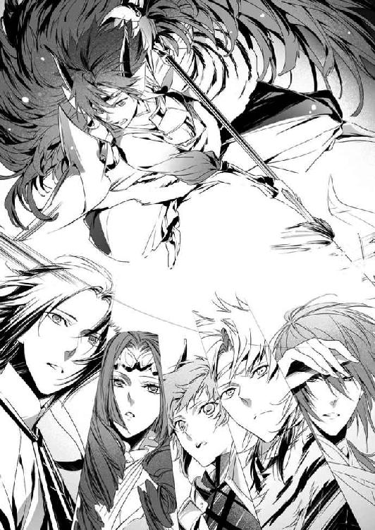
戦斧から放たれたのは、一切の穢れを祓う強い浄化の光。
帝都全域に広がった金色。
すべての暗がりにまで入りこむほどに広がった光に、蒸発するように穢れは消え失せ、穢れによって命を繫いでいた蟲は、塵芥と化して崩れ去る。
蒼司朗の眼前にいた、巨大で醜悪な蟲も、金色の光を浴びて光の塊となり、穢れは蒸発し、蟲は崩れる。
そのあとに残るのは────。
「......おいで」
広げた両手で、蒼司朗は五つの命をしっかりと抱き締めた。
10
帝都では『更衣の祓い』の日は晴れの特異日として知られている。今年も統計結果を裏切らず、雲ひとつない快晴だ。
祭日なので、望月造園の仕事もお休みである。
蒼司朗は帝都神社に泊まり込んだので、こちらに戻ってはいない。
「お父さん、清くん、池波さんたちも！ ほら、早く早く！ みなさん、お待ちかねよ！」
お出かけの支度を整えた女将の梢は、一緒に出かける庭師たちを出迎え、望月造園の親方や息子、住み込みの庭師たちを急かす。
「わぁかってる、ってばよ......！」
煙管を銜え、欠伸を嚙み殺しながら出てきた望月左近に、集合時間の少し前には全員集合していた庭師たちは、一斉にお辞儀する。
「親方、っはようごぜぇます！」
「おう、っはよ。元気だなぁ、オメェら......！」
望月左近は苦笑する。
ほんの数時間前、望月造園の庭師全員は『蟲呼びの夜』の事後処理で、帝都大通りの折れた街路樹の枝を直したり、植え込みを綺麗に剪定し直し、掃除して帰ったばかりだ。
夕方に仮眠しているとはいえ、どれぐらいの仕事がいつ始まるか、よくわからない状態で待機し、作業にかかったのだから、『蟲呼びの夜』のあとの作業は、普通の仕事よりも無駄に疲れる。
「眠いしだるいですけど、今日は俺らの蒼ちゃんの晴れ舞台ですからね！」
「親方！ カメラ大丈夫ですか!?」
「蒼ちゃん、ちっけぇから、撮り逃さないでくださいよ？」
「バーロー、わかってらぁ！」
わいわいと囃した庭師たちを怒鳴りつけ、火種を落として煙管を片づけた望月左近は、肩で風を切って歩きだす。
「行くぜ、野郎ども！」
「へい！」
「はい、行きましょう」
にこやかに門口に立った梢は、切り火を切って親方や庭師の皆を送りだす。
最後に玄関や門を閉めるのは、息子でありまだ見習い庭師の清志朗と、望月造園の一番若手の庭師である池波だ。
「父さんだって、元気さじゃ全然負けてないよ」
「親方の場合、絶対、はしゃぎすぎっスよ。とっとと寝ろとか、おいらたちに言っときながら、親方は今朝方遅くまで、カメラいじってたじゃないっスか」
興奮して眠れなかったのに違いない。
「テメー、池！ うるせーぞ！」
振り向いて怒鳴った左近に、庭師や梢、清志朗たちは笑った。
帝都城公園までは、バスで。
帝都城で大きな催しものや儀式がある祝祭日は、道路や駐車場が混雑するので、公共の交通機関の利用が推奨されている。
ぽかぽかとした麗らかな陽気の中、帝都城では予定どおり厳かに『更衣の祓い』の儀式が執り行われる。
『更衣の祓い』は、帝の衣替えの儀式だ。
この日を境に、帝は衣装のすべてを春物に新調され、役目を終えた冬の衣装はお焚き上げして天に返される。
『更衣の祓い』のため、帝の御座所である帝都城の入り口から、特設された舞台まで、緋毛氈の道が敷かれていた。
緋毛氈の道の途中、緋毛氈を踏んで上がれる場所に、帝が衣装を替え、儀式を見届けられる小櫓『召し替えの座』が設けられている。壁の代わりに四方に御簾を下ろされた『召し替えの座』は、明るさの関係で、中から外は見えても、外から中の様子は覗けない。
『召し替えの座』の中に入るのは、帝一人であることを知らせるため、帝が入られるまでは、すべての御簾が上げられている。
『召し替えの座』と舞台の間には、お焚き上げを行う護摩壇が設けられている。
『更衣の祓い』を見届けたいと願う者たちに開放されている観客席は、ロープを張って区切られた、特設された舞台と帝都城を繫ぐ緋毛氈のある側を除く三方。帝都城を眺める側の観客席が、ゆったりと広めに取られている。
一週間前から入場整理券が配布されるが、入場後は早い者順に好きな場所を選べる。開場の少し前には入場整理券の若い番号を持つ者から、呼ばれやすい場所に立ち、順番を待っている。
大勢の者たちが『更衣の祓い』を見に行くので、帝都城公園の売店も売り上げ盛況だ。
いつもの位置でのんびりと寝そべっている犬も、目の前を通りすぎていく人たちを眺めている。
「（入場整理券の配布状況は？）」
「（例年どおりです。入場整理券をもらいに来たのではない者や様子のおかしい者の入場は、現在のところ確認されていません）」
飲みものや土産物を買う客に紛れて、売店は私服で活動する公儀隠密たちの情報交換の場所にも使われている。
儀式が始まってから帝は登場するが、その他の者たちは、城勤めの高官たちも含め、自分たちに与えられている場所で整然と待つ決まりになっている。
「どうぞ、若様。こちらです」
若様のお世話係である篠原勇輝は、城まで迎えに行って、若様を警護しながら席に案内する。若様の格好は、通学時と同じく、帝都学園高等部の白い制服だ。
ひと足先に到着していた安藤奏と芙蓉薫子は、起立して若様を待っていた。今年の『更衣の祓い』を受け持つ玄武神社の蔵田実親は、儀式の進行のためにここにはいない。
「おはようございます、若様！ ご機嫌いかがですか」
「少し冷えるようでしたら、お申しつけください。温風を送りましてよ」
朱雀の戦士である芙蓉薫子が得意として扱うものは、風と炎。温風なんて、お安いご用だ。
気遣ってくれる優しい者たちに、にこりと若様は微笑む。
「ありがとう。今日はとても気分がいいよ」
（これまでのどの『蟲呼びの夜』のあとより、空気が穢れなく澄んでいるように感じる）
お天気のせいもあるのかもしれないが、とにかく気持ちいいと感じる。
「ミギャ」
「キュイ」
「チュピ」
「「（しゅー）」」
若様にくっついていて、髪の合間やポケットから、ひょこっと顔を出したピヨ四神が、芙蓉薫子と安藤奏に挨拶するように鳴いた。
帝都神社に泊まり、早朝に奥庭の庭仕事をした蒼司朗は、朝の散歩に訪れた若様に、ピヨ四神を託していた。練習も不十分のまま参加する蒼司朗は、どんなアクシデントが起こるかもわからないので、『更衣の祓い』にピヨ四神を連れてはいけない。
奥庭で自由に遊んで蒼司朗が迎えに来るのを待つこともできるが、若様大好きのピヨ四神は、若様と一緒にいることを選んだ。
『更衣の祓い』は帝都城内堀の内で行われる行事なので、若様と一緒にいるピヨ四神の姿は、霊力のない一般の者たちにも見える。
「今年も気持ちよく晴れてよかった」
定められた席に着いた若様は、愛くるしいピヨ四神と一緒に眩しそうに空を見上げて微笑み、早くから観客席にやってきて、若様ビューの絶好のポジション取りに成功した者たちが、始まる前から感涙に咽ぶ。
帝の警護に当たる四神の戦士は神官装束で、若様とともに『召し替えの座』の一番近くに。その次に帝都神社と、今年の受け持ちではない四神神社の神官が控えている。
帝都城公園と帝都城の警備を行っている警備員や帝都警察の警官は、制服姿であちこちに配置され、不審な行動を取る者がいないか、目を光らせている。
私服姿の公儀隠密と公儀隠密候補生たちも、観客に混じって監視の目を光らせているので、これまで『更衣の祓い』で一度も大事が起こったことはない。
ただ、今の若様はあまりに見目麗しく、その美麗さに目が眩んだ者がふらふらと行動しそうになるので、不埒な行動を取る前に睡眠薬で眠らせる吹き矢の射手が、大増員されてなおかつ大忙しで、まったく気を抜けない状況にあるのは、ご愛嬌だ。
本来は帝都城奥庭のお庭番も、四神の戦士と同じ場所で帝と若様の警護に当たるのだが、今年もその姿はない。
去年の秋に奥庭のお庭番に就任した望月蒼司朗は、今年、『更衣の祓い』の『武闘の舞』の舞手として、舞台に上がるのだ。
そして舞台下は、『更衣の祓い』を受け持つ神社の神官の待機場所になっている。
「大丈夫だね、蒼司朗クン」
「断定されると、逃げ場ないですよ、先輩......！」
にっこりと微笑んで声をかけた蔵田実親に、蒼司朗は口を尖らせる。
あの声がけは心配や励ましではなく、追い詰めているようにしか聞こえない。
一人前に立派な衣装を身に纏い、臆することなく言い返した蒼司朗に、周りで壁のように聳え立っていた玄武神社の神官たちが、小声で笑う。
「実親様にそれだけ言い返せれば、心配ないな」
「肝が据わってるよ、本当に」
「小さいのにな」
「背が低いのは、今のオレの個性です！ 見ててください！ これからガンガン成長しますから！ すぐに追いつきますからね！」
すぐって、いったいいつだろう。そのままでも十分に愛嬌があるし、大人顔負けの活躍をしているので、蒼司朗が成長してしまうのは、惜しい気もする。
まだ青臭さの残る初々しい少年の声で宣言した蒼司朗に、玄武神社の神官たちはくすぐったい気分で破顔した。
蔵田実親は静かに蒼司朗を見つめる。
（すごいね。この場の嫌な緊張が一瞬で綺麗に解れたよ）
誰も肩に力が入っていないのが、和らいだ空気でわかる。
かけられた言葉のせいで、何とも中途半端な物言いをしてしまった蒼司朗は、澄んだ瞳でまっすぐに蔵田実親を見つめ返す。
「自信なんてないです、っていうか、昨日ほんの少し練習しただけで、自信なんてあるほうが変ですけど、蔵田先輩、オレはオレなりに精一杯、やれるだけのことをします。貸していただいたこの衣装に恥じないよう、悔いのないようがんばります」
「うん。ありがとう」
蔵田実親は蒼司朗に心から感謝する。
蒼司朗は、たまたま余っていた衣装が着られる体格だったからという理由で引っ張りだされた、人数合わせの助っ人にすぎない。
退っぴきならない事情で、これまであれこれとやらされてきたので、蒼司朗自身、どう上手に断ればいいのかわかっていないだけなのかもしれないが、無理を言ったことを引き受けてもらえるのは、本当にありがたい。
「蒼司朗様、『武闘の舞』では、絶対に後ろに下がらず、できるだけ前に出てくださいね。間違って踏み潰すと大変ですから」
「はい、わかりました」
おどけた調子で冗談っぽく言われたが、その危険は十分にあると蒼司朗は思う。
小柄な蒼司朗は、玄武神社の神官の目の高さに頭がこないから、視界から外れやすいのだ。見えなければぶつかるし、蒼司朗は玄武神社の神官に足を踏まれただけでも危険だし、体重をかけられたなら足の指を骨折する可能性がある。
「覚えているように動いてください。我々で合わせます」
「すみません、お願いします」
舞と殺陣の段取りは、一生懸命覚えたつもりだが、あの短時間の指導では、とてもではないが身についていないだろう。
玄武神社の神官に、合わせてもらう他はない。
「では、蒼司朗クンを上手に手懐けて、奥庭の四神様をゲットしましょう！」
「（おー！）」
やるぞと気合いを入れて拳を上に突き上げた蔵田実親に、玄武神社の神官たちは笑いながら小声で応じ、同じように拳を上に突き上げる。
外に聞こえるため大勢で大声は出せないので、蔵田実親の言葉に乗っかって静かに団結する玄武神社の神官たちの姿を、蒼司朗はげんなりと見つめる。
「......手懐けるって......。モロバレしてて、それ、意味あるんですか......」
親切には、がっつりと下心。
ありがたみも何もない。
実に蔵田実親らしいやり方である。
観客席が埋まり、若様がいる側の関係者席の空きもなくなった。
法螺貝が吹き鳴らされ、雅楽の音とともに『更衣の祓い』が始まる。
城から出てきた帝が、緋毛氈を踏んで進み、『召し替えの座』に入られて、四方の御簾が下ろされた。
今年儀式を受け持つことになった玄武神社の神官は、待機場所になっていた舞台の下から春物の新しい衣類の載った衣装盆を持って出てきた。
衣装盆を持った神官は、その衣装が観客に見えるよう、舞台の周りをくるりと回ってから、舞台の上に上がる。
帝の衣類は、公費で誂えられるものの他に、帝御用達の仕立屋を介し、一般から献上されるものがある。このようなものを帝にぜひ献上したいと願いでた出資者は、やや遠目ではあるが、衣類を載せた衣装盆にかけられた半紙に、献上した自分の名前が記されていることと、献上したものに間違いがないことをここで確認する。
春物のすべての衣装を載せた衣装盆が舞台に置かれ、それを運んだ神官が舞台を下りた。
仕掛けのされた舞台、衣装盆の陰から、災厄や病魔の禍々しい衣装をつけた神官が次々と現れる。
帝の衣装に近づこうとする災厄や病魔を祓うため、豪奢な衣装を身につけた神官が、颯爽と舞台に上がる。
象徴的な『武闘の舞』の始まりだ。
「きゃー！ 清くん、蒼ちゃんが一番手前にいるわ！ 前に出してもらえるなんて、すごい！ お父さん、写真！ 写真を撮ってくださいな！」
梢は感激して大はしゃぎで舞台を見つめるが、清志朗や左近は冷静に思う。
（蒼くん、小さいからだよね、きっと）
（後ろにいちゃ、ヤベーだろ）
おめでたい舞で、ぷちっといかれて大怪我でもされては大変不吉だ。『更衣の祓い』が台無しになってしまう。
練習とは名ばかりで、段取りを確認しただけのお粗末なものだと聞いていた芙蓉薫子は、舞台を華麗に動き回る蒼司朗の姿に感心する。
「思ったより、様になってるのね。よかったわ」
予想以上に素晴らしい。
高評価の芙蓉薫子とは対照的に、安藤奏は、ふんと鼻を鳴らす。
「『追儺の儀式』から、二カ月も経ってませんよ。学校を休んで、あの香月宣之助太夫につきっきりで指導してもらって、習練場の床板で擦って、何足も足袋に穴が開くほど稽古したんです。あれくらいできて当然です」
蒼司朗が積み重ねた努力は、安藤奏も認めている。
日が経つに連れ記憶は薄れても、身体に叩きこんだものは、しっかりと覚えているものだ。基礎がしっかり身についているので、蒼司朗の所作はどれも優雅であり、無駄がない。体重の移動も完璧で、姿勢が崩れるところがない。
「ミギャギャ、ミギャ」
「キュイキュイ」
「チュピチュピ」
「「（しゅー）」」
若様の膝に行儀よく並んで座ったピヨ四神は、舞台で舞う蒼司朗を自慢するように鳴く。
くすっと笑った若様は、ピヨ四神を優しい手つきで撫でる。
「あぁ、まったく、そのとおりだ」
食い入るように舞台を見つめ、無難に大役を果たしている蒼司朗の姿を確認して、ほっと安堵してから、そんな自分に篠原勇輝は腹を立てる。
「ったく、何でもほいほい引き受けやがって、あのチビ......！」
災禍や病魔が敢然と退けられ、戦った玄武神社の神官は、帝都神社の小此木神官長を迎え入れた。雅楽は小さくなって消え、神官の振る鈴の音、祝詞の声に合わせ、小此木神官長は玉串を振り、新しい衣類に祝福を与える。
促されるままに舞い、どうにか無事に役目を終えた蒼司朗は、玄武神社の神官たちと一緒に舞台を下りる。
（何とか、なった......）
途中、記憶していた段取りと違って、殺陣でひやりとすることが何度もあったが、大きな失敗もなく終えられた。
（帝都に来てから、何だかこんなことばっかりだ）
緊張するし、苦しくてつらいこともたくさんあるけれど、蒼司朗は多くの人の役に立てていると思える。
努力が認められることが、嬉しい。
待機場所に戻り、大きく息を吐いた蒼司朗の背を、労うように誰かがそっと叩いた。
（え？）
驚いて足を止めた蒼司朗の頭を、擦れ違いざまにあちこちから伸びてきた、いくつもの温かい大きな手が撫でていった。
「────蒼司朗クン、君がいてくれて本当によかった」
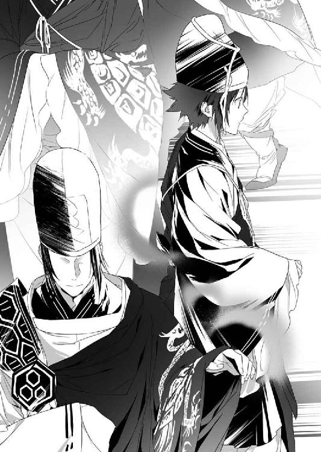
背後から確かに声が聞こえた蔵田実親の姿は、蒼司朗が振り向いたときには、他の神官の向こうに隠れ、どこにも見えなくなっていた。
神官長に祝福を受けた衣装盆、そのうちのひと揃いの衣類の載ったものは、雅楽の音とともに厳かに、帝のいる『召し替えの座』に運ばれる。
帝は『召し替えの座』の中で、それまで身につけていた衣類を脱ぎ、新しい衣類に着替えた。
脱がれた衣類は、衣装盆に載せられて『召し替えの座』から出された。
これは、もう用をすませた冬物の衣類。
脱ぎ置かれたばかりの衣類を載せた衣装盆を運ぶ神官に続き、帝都城の中から出てきた神官が、帝の衣類を載せた衣装盆を続々と運びだす。
運びだされた衣装は、護摩壇に入れられ、お焚き上げが行われる。
護摩壇に火が入れられ、『更衣の祓い』を見届けた者たちは、天に向かう炎に平穏を祈る。
『更衣の祓い』を経て、季節は春になる。
名前と同じ、澄み渡った空の下、蒼司朗にとって、帝都に来て初めての春がくる。
了
ようこそ帝都へ
『更衣の祓い』の翌日、蒼司朗と四神の戦士は帝都神社の社務所に呼ばれた。
「この子たちの飼い主さんのことがわかりました」
社務所の事務室の隅にケージを置き、一時預かりで引き取った犬の世話を任されていた鈴宮神官は、母犬に餌をあげながら話す。
蒼司朗が奥庭の四神と四神変化して救いだした犬の母子は、見かけた場所と犬種から、何処で誰が飼っていたかはすぐにわかったが、その飼い主一家は半月前に帝都を転出していた。
ご近所への聞き取り調査を行った結果、子犬は飼い主が転出後に生まれたことが判明した。
犬は区切られた場所のほうが落ち着くので、急いで設置された柵型のケージだが、水や餌の皿に加えて、毛布やトイレシートもあり、清潔でなかなか快適そうだ。
「『蟲呼びの夜』のあと、すぐに獣医さんの診察を受けましたが、親犬と子犬の健康状態に問題はありませんでした。こちらでお預かりして、注意して様子を見ていましたが、特に気になるところもありません」
蟲に取りこまれて、無事に戻った犬なんて、前例がない。医学的方面から確認し、神官の目で観察したが、何もおかしなところは見つからなかった。
素人目にも、犬たちの毛艶はとてもよく、ふかふかだ。母犬に食欲はあるようだし、ケージの中でころころと遊びまわっている子犬たちは、とても元気だ。
「経過観察の期間が終わったら、この犬は全部僕のところで面倒を見るよ。玄武神社を頼ってくれたんだしね」
にこやかに言った蔵田実親を、篠原勇輝は怪訝な顔で見る。
「センパイ、こいつら見つけたとき、保健所に引き渡す気満々だったじゃないスか」
鮮やかな掌返しだ。聞いていた安藤奏は、くすっと笑う。
「今は、帝都城の守護神様のご加護を受けた、おめでたいお犬様ですもんね♡ 蔵田センパイだけ、ずるいですよ。子犬は、ちょうど四匹います。一匹ずつ、公平に分けなくちゃ」
「ちょっと待てよ、母親や兄弟と引き離すのか!?」
驚く蒼司朗に、安藤奏は肩を竦める。
「だって、母犬には飼い主がいるじゃないですか。誰かが登録している犬は飼えませんもん」
母犬には登録された飼い主がいるが、生まれて間もない子犬に飼い主はいない。子犬なら、何の問題もなくもらって帰れる。
「まだこいつら赤ん坊だぞ。面倒見られるのか？」
「ミギャ」
「キュウ」
「ピチュ」
「「（しゅー）」」
犬のケージを覗く蒼司朗の衣類や髪の間から、ひょこひょことピヨ四神が顔を出す。
偉そうなことを言うなと、安藤奏は蒼司朗を睨んだが、蒼司朗は赤ちゃん返りしたこのちびっちゃい四神様をきちんと面倒見ている。
「安藤、お前、忙しいだろ？」
「そ、それはまぁ、そうだけど！」
「嫌ぁね。計算や下心で、生き物を飼うものではなくってよ？」
起きている子犬に、わきゃわきゃと寄って来られて、芙蓉薫子はくすくすと笑った。綺麗なお姉さんは、子犬にも大人気だ。
経過観察の期間を何ごともなく過ごした犬の母子は、蔵田実親の申し出どおり、玄武神社に預けられた。飼い主が引き取りを拒否しても、今回は特例として母犬を処分しないことが決まって、心配していた蒼司朗もひと安心だ。子犬たちは離乳期を経てから、四神神社で一匹ずつ引き取られることになった。
「出産間近で、神経過敏になっていたんでしょうね。引っ越しの作業のどさくさに、首輪から抜けて逃げてしまったようで、飼い主さんはとても気にしていらしたみたいです」
鈴宮神官は玄武神社に向かう途中に会った篠原勇輝に、ほっとした様子で話した。
転居先を突きとめて連絡がついた飼い主は、とてもいい人で、逃げた犬を見かけたなら、迎えに行くまでの間預かっていてほしいと、隣人に頼んでいたようだ。
「明日、帝都にいらして、子犬も全部引き取るそうですよ」
「帝都の外に出しちゃって、いいんスか？」
「四神の祝福を受けている犬ですから、何も心配ないでしょうと小此木神官長は仰ってました。皆さんで子犬を見に行くのも、もう終わりですね。ちょっと寂しいですね」
「────寂しいなんて思うのは、あのチビぐらいっスよ」
蔵田実親は玄武神社に犬の母子を引き取ったものの、その世話をしているのは、玄武神社の神官だ。安藤奏が顔を出したのは犬が玄武神社に移った初日だけだし、まだ子犬を引き取ると確定したわけではないので、情が移らないように芙蓉薫子は来ていない。
毎日のように犬の母子の様子を見に玄武神社に通ったのは蒼司朗と、それに付き合っている清志朗ぐらいのものだ。
玄武神社の社務所の隅に、犬の母子のケージはあったのだが、そこは空だ。
「天気がいいから、蒼くんが裏のほうにお散歩に行きました」
ケージの掃除を手伝っていた清志朗に教えられ、蔵田実親に知らせに行く鈴宮神官と別れて、篠原勇輝は玄武神社の裏に向かう。
ちょっとした築山や池のある裏手は、お散歩にいいコースだ。
クローバーが生えている日当たりのいい場所に、ピヨ四神を連れた蒼司朗と犬の母子がいた。ぽかぽかした春の日を浴びながら、皆で気持ちよくお昼寝中だ。
「......ったく、なぁにやってんだか」
はしゃぎまわってたっぷり遊んだのか、ふわふわしたちびっちゃいピヨ四神と子犬に群がられながら、幸せそうに眠っている蒼司朗に苦笑した篠原勇輝は、その隣にそっと腰を下ろした。
明日は、犬の母子のお引っ越しだ。
二〇一一年十一月二十五日流星香 来客や引っ越しがあると部屋が片づきますね☆
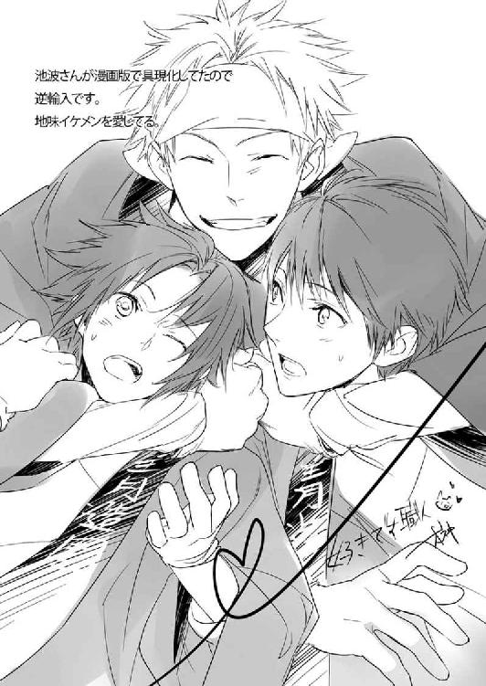
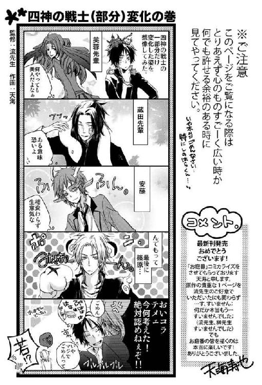
著者
流星香
Seika Nagare
９月28日生まれ、天秤座、Ｂ型。大阪生まれ大阪育ちの、大阪在住大阪人。お祭り騒ぎ大好きな、明るく正しい子どもの味方である♡
戦国時代ファンタジーでデビュー。ファンタジー作家として、これまでに多数の著作を発表していて、西洋風、現代モノ等、守備範囲はファミレスのように品揃えが豊富である。
お茶の時間をこよなく愛し、綺麗で美味しいお菓子からたくさんの元気をもらっている♡
イラスト
 空也
空也
Kuya Sakaki
東京在住。
今回のお話にはワンコが出てきますが、映画などでのワンコものの感動は異常ですね。どんな王道話でも大抵泣いてしまいます。猫系のお話があまりないのは、猫様の特性上、長期の撮影に向いてないからでしょうか。
電子版 ビーズログ文庫
お庭番望月蒼司朗参る！
更衣の祓いとお引っ越し
著者／流星香
イラスト／空也
2013年7月2日電子版（EPUB3）ver.1.0制作
発行者 浜村弘一
発行所 株式会社 エンターブレイン
http://www.enterbrain.co.jp/
デザイン 永野友紀子（Zapp!）
(c)2011 Seika NAGARE
PUBLISHED BY ENTERBRAIN, INC.
本電子書籍はビーズログ文庫『お庭番望月蒼司朗参る！ 更衣の祓いとお引っ越し』
（2011年12月27日発行 初刷）を元にして制作しております。